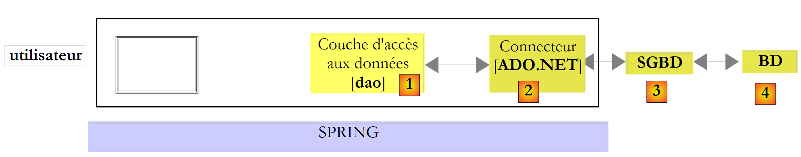
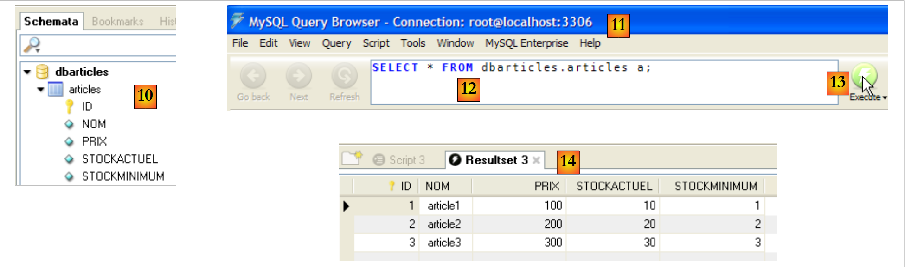
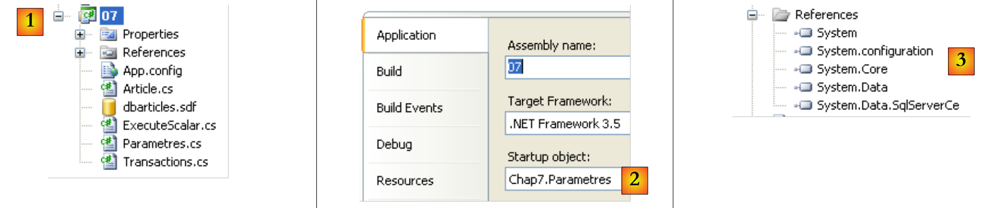
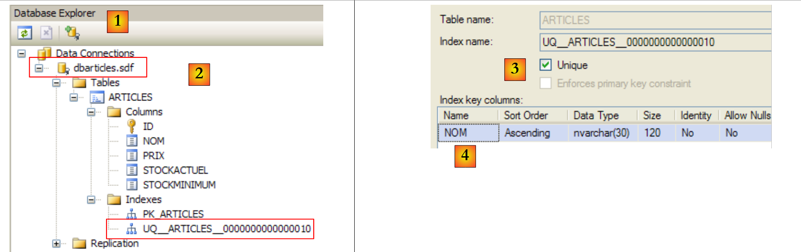
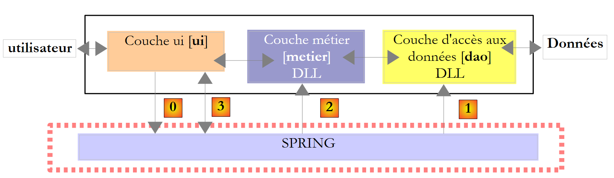
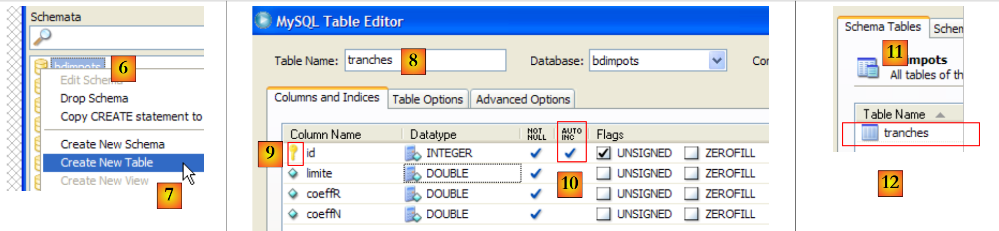
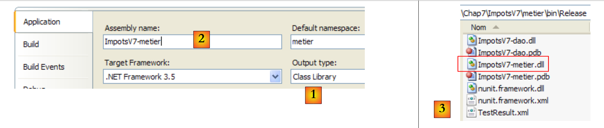

9. Acesso às bases de dados
9.1. Conector ADO.NET
Voltemos à arquitetura em camadas utilizada em várias ocasiões
 |
Nos exemplos analisados, a camada [dao] utilizou, até ao momento, dois tipos de fontes de dados:
- dados incorporados diretamente no código
- dados provenientes de ficheiros de texto
Neste capítulo, analisamos o caso em que os dados provêm de uma base de dados. A arquitetura de 3 camadas evolui, assim, para uma arquitetura multicamadas. Existem várias. Vamos analisar os conceitos básicos com a seguinte:
 |
No esquema acima, a camada [dao] [1] comunica com a SGBD [3] através deuma biblioteca de classes específica do SGBD utilizado e fornecida com o mesmo. Esta camada implementa funcionalidades padrão reunidas sob a designação ADO (Active X Data Objects). A uma camada deste tipo chama-se «provider» (fornecedor de acesso a uma base de dados, neste caso) ou ainda «conector». A maioria dos SGBD dispõe agora de um conector ADO.NET, o que não era o caso nos primórdios da plataforma .NET. Os conectores .NET não oferecem uma interface padrão para a camada [dao], pelo que esta inclui no seu código os nomes das classes do conector. Se se mudar de SGBD, muda-se de conector e de classes, sendo então necessário alterar a camada [dao]. Trata-se de uma arquitetura eficiente, porque o conector .NET, tendo sido escrito para um SGBD específico, sabe tirar o máximo partido deste, e é rígida, pois mudar de SGBD implica alterar a camada [dao]. Este segundo argumento deve ser relativizado: as empresas não mudam de SGBD com muita frequência. Além disso, veremos mais adiante que, desde a versão 2.0 do .NET, existe um conector genérico que proporciona flexibilidade sem sacrificar o desempenho.
9.2. Os dois modos de exploração de uma fonte de dados
A plataforma .NET permite a exploração de uma fonte de dados de duas formas diferentes:
- modo ligado
- modo desligado
No modo ligado, a aplicação
- estabelece uma ligação com a fonte de dados
- trabalha com a fonte de dados em modo de leitura/gravação
- encerra a ligação
No modo desconectado, a aplicação
- abre uma ligação com a fonte de dados
- obtém uma cópia em memória de todos ou parte dos dados da fonte
- encerra a ligação
- trabalha com a cópia em memória dos dados, em modo de leitura/gravação
- quando o trabalho estiver concluído, abre uma ligação, envia os dados alterados para a fonte de dados para que esta os registe e encerra a ligação
Aqui, apenas abordamos o modo conectado.
9.3. Os conceitos básicos da utilização de uma base de dados
Vamos apresentar os principais conceitos de utilização de uma base de dados utilizando o SQL Server Compact 3.5. Este SGBD é fornecido com o Visual Studio Express. Trata-se de um SGBD leve, que só consegue gerir um utilizador de cada vez. No entanto, é suficiente para uma introdução à programação com bases de dados. Posteriormente, apresentaremos outros SGBD.
A arquitetura utilizada será a seguinte:
 |
Uma aplicação de consola [1] irá utilizar uma base de dados do tipo SqlServer Compact [3,4] através do conector Ado.Net deste SGBD [2].
9.3.1. A base de dados de exemplo
Vamos criar a base de dados diretamente no Visual Studio Express. Para tal, criamos um novo projeto do tipo consola.
 |
- [1]: o projeto
- [2]: abrimos a vista «Explorador de bases de dados»
- [3]: criamos uma nova ligação
 |
- [4]: seleciona-se o tipo do SGBD
- [5,6]: escolhe-se o SGBD SQL Server Compact
- [7]: cria-se a base de dados
- [8]: uma base de dados SQL Server Compact é encapsulada num único ficheiro com a extensão .sdf. Indica-se onde a criar, neste caso na pasta do projeto C#.
- [9]: atribuiu-se o nome [dbarticles.sdf] à nova base de dados
- [10]: seleciona-se o idioma francês. Isto tem impacto nas operações de ordenação.
- [11,12]: a base de dados pode ser protegida por uma palavra-passe. Aqui, «dbarticles».
- [13]: confirma-se a página de informações. A base de dados vai ser criada fisicamente:
 |
- [14]: o nome da base de dados que acabou de ser criada
- [15]: assinalamos a opção «Save my password» para não termos de a voltar a introduzir sempre
- [16]: verifica-se a ligação
- [17]: está tudo bem
- [18]: confirma-se a página de informações
- [19]: a ligação aparece no explorador de bases de dados
- [20]: por enquanto, a base de dados não tem tabelas. Vamos criar uma. Um artigo terá os seguintes campos:
- id: um identificador único — chave primária
- nom: nome do artigo — único
- prix: preço do artigo
- stockactuel: o seu stock atual
- stockminimum: o stock mínimo abaixo do qual é necessário reabastecer o artigo
 |
- [21]: o campo [id] é do tipo inteiro e é a chave primária [22] da tabela.
- [23]: esta chave primária é do tipo Identity. Este conceito específico do servidor SGBD SQL indica que a chave primária será gerada pelo próprio SGBD. Neste caso, a chave primária será um número inteiro que começa em 1 e é incrementado em 1 a cada nova chave.
 |
- [24]: os restantes campos são criados. Note-se que o campo [nom] tem uma restrição de unicidade com a e [25].
- [26]: atribui-se um nome à tabela
- [27]: após validar a estrutura da tabela, esta aparece na base de dados.
 |
- [28]: solicita-se a visualização do conteúdo da tabela
- [29]: por enquanto, está vazia
- [30]: preenche-se com alguns dados. Uma linha é validada assim que se passa à introdução da linha seguinte. O campo [id] não é preenchido: é gerado automaticamente quando a linha é validada.
Resta-nos configurar o projeto para que esta base de dados, que se encontra atualmente na raiz do projeto, seja copiada automaticamente para a pasta de execução do projeto:
 |
- [1]: solicitamos a visualização de todos os ficheiros
- [2]: aparece a base de dados [dbarticles.sdf]
- [3]: inclui-se no projeto
 |
- [4]: a operação de adição de uma fonte de dados a um projeto inicia um assistente de que não precisamos aqui [5].
- [6]: a base de dados faz agora parte do projeto. Voltamos ao modo normal [7].
- [8]: o projeto com a sua base
- [9]: nas propriedades da base de dados, pode-se ver que esta será automaticamente copiada para a pasta de execução do projeto. É aí que o programa que vamos escrever irá buscá-la.
Agora que temos uma base de dados disponível, vamos poder utilizá-la. Antes disso, vamos fazer alguns recordatórios SQL.
9.3.2. Os quatro comandos básicos da linguagem SQL
O SQL (Structured Language Query) é uma linguagem, parcialmente normalizada, para consulta e atualização de bases de dados. Todas as SGBD respeitam a parte normalizada do SQL, mas acrescentam à linguagem extensões proprietárias que tiram partido de certas particularidades do SGBD. Já encontrámos dois exemplos disso: a geração automática de chaves primárias e os tipos permitidos para as colunas de uma tabela dependem frequentemente do SGBD.
Os quatro comandos básicos da linguagem SQL que apresentamos estão padronizados e são aceites por todos os SGBD:
A consulta que permite obter os dados contidos numa base de dados. Apenas as palavras-chave da primeira linha são obrigatórias; as restantes são opcionais. Existem outras palavras-chave que não são apresentadas aqui.
| |
Inserir uma linha na tabela. (col1, col2, ...) especifica as colunas da linha a preencher com os valores (val1, val2, ...). | |
Atualiza as linhas da tabela que satisfazem a condição (todas as linhas, se não houver «where»). Para essas linhas, a coluna «coli» recebe o valor «vali» | |
Elimina todas as linhas da tabela que satisfazem a condição |
Vamos escrever uma aplicação de consola que permita emitir comandos SQL na base de dados [dbarticles] que criámos anteriormente. Aqui está um exemplo de execução. O leitor é convidado a compreender os comandos SQL emitidos e os seus resultados.
- linha 1: a chamada cadeia de ligação: contém todos os parâmetros necessários para estabelecer a ligação à base de dados.
- linha 3: solicita-se o conteúdo da tabela [articles]
- linha 16: insere-se uma nova linha. Note-se que o campo id não é inicializado nesta operação, pois é o SGBD que irá gerar o valor deste campo.
- linha 19: verificação. Linha 28: a linha foi efetivamente adicionada.
- linha 30: aumenta-se em 10% o preço do artigo que acabou de ser adicionado.
- linha 33: verifica-se
- linha 42: o aumento do preço ocorreu efetivamente
- linha 44: elimina-se o artigo que foi adicionado anteriormente
- linha 47: verifica-se
- linhas 53-55: o artigo já não está presente.
9.3.3. As interfaces básicas do ADO.NET para o modo conectado
Voltemos ao esquema de uma aplicação que utiliza uma base de dados através de um conector ADO.NET:
 |
No modo ligado, a aplicação:
- abre uma ligação com a fonte de dados
- trabalha com a fonte de dados em modo de leitura/gravação
- encerra a ligação
Três interfaces ADO.NET estão principalmente envolvidas nestas operações:
- IDbConnection, que encapsula as propriedades e métodos da ligação.
- IDbCommand, que encapsula as propriedades e métodos do comando SQL executado.
- IDataReader, que encapsula as propriedades e métodos do resultado de um comando SQL Select.
A interface IDbConnection
Serve para gerir a ligação à base de dados. Os métodos M e propriedades P desta interface que iremos utilizar são os seguintes:
Nome | Tipo | Função |
P | cadeia de ligação à base de dados. Especifica todos os parâmetros necessários para estabelecer a ligação a uma base de dados específica. | |
M | abre a ligação à base de dados definida por ConnectionString | |
M | encerra a ligação | |
M | inicia uma transação. | |
P | estado da ligação: ConnectionState.Closed, ConnectionState.Open, ConnectionState.Connecting, ConnectionState.Executing, ConnectionState.Fetching, ConnectionState.Broken |
Se Connection for uma classe que implementa a interface IDbConnection, a abertura da ligação pode ser efetuada da seguinte forma:
A interface IDbCommand
Serve para executar um comando SQL ou um procedimento armazenado. Os métodos M e propriedades P desta interface que iremos utilizar são os seguintes:
Nome | Tipo | Função |
P | indica o que deve ser executado - obtém os seus valores de uma enumeração: - CommandType.Text: executa a ordem SQL definida na propriedade CommandText. Este é o valor por predefinição. - CommandType.StoredProcedure: executa um procedimento armazenado na base de dados | |
P | - o texto da ordem SQL a executar se CommandType = CommandType.Text - o nome da procedimento armazenado a executar se CommandType = CommandType.StoredProcedure | |
P | a ligação IDbConnection a utilizar para executar a ordem SQL | |
P | a transação IDbTransaction na qual executar a ordem SQL | |
P | a lista de parâmetros de uma ordem SQL configurada. A ordem «update articles set price=price*1.1 where id=@id» tem o parâmetro @id. | |
M | para executar uma ordem SQL Select. Obtém-se um objeto IDataReader que representa o resultado do Select. | |
M | para executar uma ordem SQL: Atualizar, Inserir, Eliminar. Obtém-se o número de linhas afetadas pela operação (atualizadas, inseridas, eliminadas). | |
M | para executar uma ordem SQL Select que devolve apenas um único resultado, tal como em: select count(*) from articles. | |
M | para criar os parâmetros IDbParameter de uma ordem SQL configurada. | |
M | permite otimizar a execução de uma consulta parametrizada quando esta é executada várias vezes com parâmetros diferentes. |
Se Command for uma classe que implementa a interface IDbCommand, a execução de uma ordem SQL sem transação terá a seguinte forma:
A interface IDataReader
Serve para encapsular os resultados de uma ordem SQL Select. Um objeto IDataReader representa uma tabela com linhas e colunas, que é processada sequencialmente: primeiro a primeira linha, depois a segunda, ... Os métodos M e propriedades P desta interface que iremos utilizar serão os seguintes:
Nome | Tipo | Função |
P | o número de colunas da tabela IDataReader | |
M | GetName(i) devolve o nome da coluna n.º i da tabela IDataReader. | |
P | Item[i] representa a coluna n.º i da linha atual da tabela IDataReader. | |
M | avança para a linha seguinte da tabela IDataReader. Devolve o valor booleano True se a leitura tiver sido bem-sucedida; caso contrário, devolve False. | |
M | fecha a tabela IDataReader. | |
M | GetBoolean(i): devolve o valor booleano da coluna n.º i da linha atual da tabela IDataReader. Os outros métodos análogos são os seguintes: GetDateTime, GetDecimal, GetDouble, GetFloat, GetInt16, GetInt32, GetInt64, GetString. | |
M | Getvalue(i): devolve o valor da coluna n.º i da linha atual da tabela IDataReader como tipo object. | |
M | IsDBNull(i) retorna True se a coluna n.º i da linha atual da tabela IDataReader não tiver valor, o que é simbolizado pelo valor SQL NULL. |
A análise de um objeto IDataReader assemelha-se frequentemente ao seguinte:
9.3.4. Gestão de erros
Voltemos à arquitetura de uma aplicação com base de dados:
 |
A camada [dao] pode encontrar inúmeros erros durante a exploração da base de dados. Estes erros serão reportados como exceções lançadas pelo conector ADO.NET. O código da camada [dao] deve tratá-las. Qualquer operação com a base de dados deve ser realizada num bloco try / catch / finally para interceptar e tratar uma eventual exceção e libertar os recursos que devam ser libertados. Assim, o código visto acima para processar o resultado de uma ordem Select passa a ser o seguinte:
Aconteça o que acontecer, os objetos IDataReader e IDbConnection têm de ser fechados. É por isso que este encerramento é efetuado nas cláusulas finally.
O encerramento da ligação e do objeto IDataReader podem ser automatizados com uma cláusula «using»:
- Na linha 3, a cláusula «using» garante que a ligação aberta no bloco «using(...){...}» será encerrada fora deste, independentemente da forma como se sai do bloco: normalmente ou devido à ocorrência de uma exceção. Poupa-se um finally, mas o interesse não reside nesta poupança menor. A utilização de um using evita que o programador tenha de fechar ele próprio a ligação. No entanto, esquecer-se de fechar uma ligação pode passar despercebido e «bloquear» a aplicação de uma forma que parecerá aleatória, sempre que o SGBD atingir o número máximo de ligações abertas que pode suportar.
- Linha 11: procede-se de forma análoga para encerrar o objeto IDataReader.
9.3.5. Configuração do projeto de exemplo
O projeto final ficará da seguinte forma:
 |
- [1]: o projeto terá um ficheiro de configuração [App.config]
- [2]: utiliza classes de dois ficheiros DLL que não estão referenciados por predefinição e que, por isso, devem ser adicionados às referências do projeto:
- [System.Configuration] para utilizar o ficheiro de configuração [App.config]
- [System.Data.SqlServerCe] para utilizar a base de dados SQL Server Compact
- [3, 4]: explica como adicionar referências a um projeto.
- [5, 6]: relembra como adicionar o ficheiro [App.config] a um projeto.
O ficheiro de configuração [App.config] será o seguinte:
<?xml version="1.0" encoding="utf-8" ?>
<configuration>
<connectionStrings>
<add name="dbSqlServerCe" connectionString="Data Source=|DataDirectory|\dbarticles.sdf;Password=dbarticles;" />
</connectionStrings>
</configuration>
- linhas 3-5: a baliza <connectionStrings>, no plural, define cadeias de ligação a bases de dados. Uma cadeia de ligação tem o formato «parâmetro1=valor1;parâmetro2=valor2;...». Define todos os parâmetros necessários para estabelecer uma ligação a uma base de dados específica. Estas cadeias de ligação variam consoante cada SGBD. O site [http://www.connectionstrings.com/] apresenta o formato destas cadeias para os principais SGBD.
- linha 4: define uma cadeia de ligação específica, neste caso a da base de dados SQL Server Compact dbarticles.sdf que criámos anteriormente:
- name = nome da cadeia de ligação. É através deste nome que uma cadeia de ligação é recuperada pelo programa C#
- connectionString: a cadeia de ligação para uma base de dados SQL Server Compact
- DataSource: indica o caminho para a base de dados. A sintaxe |DataDirectory| indica a pasta de execução do projeto.
- Password: a palavra-passe da base de dados. Este parâmetro não é incluído se não houver palavra-passe.
O código C# para recuperar a cadeia de ligação anterior é o seguinte:
string connectionString = ConfigurationManager.ConnectionStrings["dbSqlServerCe"].ConnectionString;
- ConfigurationManager é a classe de DLL [System.Configuration] que permite utilizar o ficheiro [App.config].
- ConnectionsStrings["nom"].ConnectionString: designa o atributo connectionString da baliza < add name="nome" connectionString="..."> da secção <connectionStrings> de [App.config]
O projeto está agora configurado. Passamos agora a analisar a classe [Program.cs], da qual vimos anteriormente um exemplo de execução.
9.3.6. O programa de exemplo
O programa [program.cs] é o seguinte:
using System;
using System.Collections.Generic;
using System.Data.SqlServerCe;
using System.Text;
using System.Text.RegularExpressions;
using System.Configuration;
namespace Chap7 {
class SqlCommands {
static void Main(string[] args) {
// consola da aplicação — executa consultas SQL introduzidas pelo teclado
// numa base de dados cuja cadeia de ligação é obtida a partir de um ficheiro de configuração
// análise do ficheiro de configuração [App.config]
string connectionString = null;
try {
connectionString = ConfigurationManager.ConnectionStrings["dbSqlServerCe"].ConnectionString;
} catch (Exception e) {
Console.WriteLine("Erreur de configuration : {0}", e.Message);
return;
}
// exibição da cadeia de ligação
Console.WriteLine("Chaîne de connexion à la base : [{0}]\n", connectionString);
// constrói-se um dicionário dos comandos SQL aceites
string[] commandesSQL = new string[] { "select", "insert", "update", "delete" };
Dictionary<string, bool> dicoCommandes = new Dictionary<string, bool>();
for (int i = 0; i < commandesSQL.Length; i++) {
dicoCommandes.Add(commandesSQL[i], true);
}
// Leitura e execução dos comandos SQL introduzidos pelo teclado
string requête = null; // texto da consulta SQL
string[] champs; // os campos da consulta
Regex modèle = new Regex(@"\s+"); // série de espaços
// ciclo de introdução e execução dos comandos SQL digitados no teclado
while (true) {
// pedido da consulta
Console.Write("\nRequête SQL (rien pour arrêter) : ");
requête = Console.ReadLine().Trim().ToLower();
// Concluído?
if (requête == "")
break;
// decompõe-se a consulta em campos
champs = modèle.Split(requête);
// consulta válida?
if (champs.Length == 0 || ! dicoCommandes.ContainsKey(champs[0])) {
// mensagem de erro
Console.WriteLine("Requête invalide. Utilisez select, insert, update, delete ou rien pour arrêter");
// próxima consulta
continue;
}
// execução da consulta
if (champs[0] == "select") {
ExecuteSelect(connectionString, requête);
} else
ExecuteUpdate(connectionString, requête);
}
}
// execução de uma consulta de atualização
static void ExecuteUpdate(string connectionString, string requête) {
...
}
// execução de uma consulta Select
static void ExecuteSelect(string connectionString, string requête) {
....
}
}
}
- linhas 1-6: os espaços de nomes utilizados na aplicação. A gestão de uma base de dados SQL Server Compact requer o espaço de nomes [System.Data.SqlServerCe] da linha 3. Existe aqui uma dependência de um espaço de nomes proprietário de um SGBD. Pode-se deduzir que o programa terá de ser alterado se se mudar de SGBD.
- linha 18: a cadeia de ligação à base de dados é lida no ficheiro [App.config] e apresentada na linha 25. Será utilizada para estabelecer uma ligação com a base de dados.
- linhas 28-32: um dicionário que armazena os nomes dos quatro comandos SQL autorizados: select, insert, update, delete.
- linhas 40-62: o ciclo de introdução dos comandos SQL digitados no teclado e a sua execução na base de dados
- linha 48: a linha digitada no teclado é dividida em campos para identificar o primeiro termo, que deve ser: select, insert, update, delete
- linhas 50-55: se a consulta for inválida, é exibida uma mensagem de erro e passa-se à consulta seguinte.
- linhas 57-61: executa-se o comando SQL introduzido. Esta execução assume uma forma diferente consoante se trate de uma ordem select ou de uma ordem insert, update, delete. No primeiro caso, a ordem recupera dados da base de dados sem a alterar; no segundo, atualiza-a sem recuperar dados. Em ambos os casos, a execução é delegada a um método que necessita de dois parâmetros:
- a cadeia de ligação que lhe permitirá ligar-se à base de dados
- a instrução SQL a executar nesta ligação
9.3.7. Execução de uma consulta SELECT
A execução de ordens SQL requer os seguintes passos:
- Ligação à base de dados
- Envio das ordens SQL para a base de dados
- Processamento dos resultados da ordem SQL
- Encerramento da ligação
As etapas 2 e 3 são realizadas repetidamente, sendo que o encerramento da ligação só ocorre no final da exploração da base de dados. As ligações abertas são recursos limitados de um SGBD. É necessário poupá-las. Por isso, procurará-se sempre limitar a duração de uma ligação aberta. No exemplo analisado, a ligação é encerrada após cada ordem SQL. É aberta uma nova ligação para a ordem SQL seguinte. A abertura/encerramento de uma ligação é dispendiosa. Para reduzir este custo, alguns SGBD oferecem o conceito de conjuntos de ligações abertas: durante a inicialização da aplicação, são abertas N ligações, que são atribuídas ao conjunto. Estas permanecerão abertas até ao fim da aplicação. Quando a aplicação abre uma ligação, recebe uma das N ligações já abertas do conjunto. Quando encerra a ligação, esta é simplesmente devolvida ao conjunto. A vantagem deste sistema é que é transparente para o programador: o programa não precisa de ser alterado para utilizar o conjunto de ligações. A configuração do conjunto de ligações depende do SGBD.
Em primeiro lugar, vamos analisar a execução das ordens SQL e Select. O método ExecuteSelect do nosso programa de exemplo é o seguinte:
// execução de uma consulta Select
static void ExecuteSelect(string connectionString, string requête) {
// gestão de eventuais exceções
try {
using (SqlCeConnection connexion = new SqlCeConnection(connectionString)) {
// abertura de ligação
connexion.Open();
// executa sqlCommand com consulta SELECT
SqlCeCommand sqlCommand = new SqlCeCommand(requête, connexion);
SqlCeDataReader reader= sqlCommand.ExecuteReader();
// exibição dos resultados
AfficheReader(reader);
}
} catch (Exception ex) {
// mensagem de erro
Console.WriteLine("Erreur d'accès à la base de données (" + ex.Message + ")");
}
}
// exibição do leitor
static void AfficheReader(IDataReader reader) {
...
}
- linha 2: o método recebe dois parâmetros:
- a cadeia de ligação [connectionString], que lhe permitirá ligar-se à base de dados
- a instrução SQL Select [requête] a executar nesta ligação
- linha 4: qualquer operação com uma base de dados pode gerar uma exceção que se queira gerir. Isto é ainda mais importante aqui, uma vez que as ordens SQL fornecidas pelo utilizador podem conter erros de sintaxe. É necessário que possamos informá-lo disso. Todo o código está, portanto, dentro de um try/catch.
- linha 5: há vários aspetos a considerar aqui:
- a ligação à base de dados é inicializada com a cadeia de ligação [connectionString]. Ainda não está aberta. Será aberta na linha 7.
- A cláusula using (Recurso) {...} é uma facilidade sintática que garante a libertação do recurso Ressource — neste caso, uma ligação — ao sair do bloco controlado pelo using.
- A ligação é de um tipo proprietário: SqlCeConnection, específico do SGBD SQL Server Compact.
- linha 7: a ligação está aberta. É neste momento que os parâmetros da cadeia de ligação são utilizados.
- linha 9: é emitida uma ordem SQL através de um objeto proprietário SqlCeCommand. A linha 9 inicializa este objeto com duas informações: a ligação a utilizar e a ordem SQL a emitir através dela. O objeto SqlCeCommand serve tanto para executar uma ordem Select como uma ordem Update, Insert ou Delete. As suas propriedades e métodos foram apresentados no parágrafo 9.3.3.
- linha 10: uma ordem SQL Select é executada através do método ExecuteReader doobjeto SqlCeCommand, que devolve um objeto IDataReader, cujos métodos e propriedades foram apresentados no parágrafo 9.3.3.
- linha 12: a exibição dos resultados é confiada ao seguinte método AfficheReader:
// exibição do leitor
static void AfficheReader(IDataReader reader) {
using (reader) {
// análise dos resultados
// -- colunas
StringBuilder ligne = new StringBuilder();
int i;
for (i = 0; i < reader.FieldCount - 1; i++) {
ligne.Append(reader.GetName(i)).Append(",");
}
ligne.Append(reader.GetName(i));
Console.WriteLine("\n{0}\n{1}\n{2}\n", "".PadLeft(ligne.Length, '-'), ligne, "".PadLeft(ligne.Length, '-'));
// -- dados
while (reader.Read()) {
// análise da linha atual
ligne = new StringBuilder();
for (i = 0; i < reader.FieldCount; i++) {
ligne.Append(reader[i].ToString()).Append(" ");
}
Console.WriteLine(ligne);
}
}
}
- linha 2: o método recebe um objeto IDataReader. Note-se que, neste caso, utilizámos uma interface e não uma classe específica.
- linha 3: a cláusula using é utilizada para gerir automaticamente o encerramento do objeto IDataReader.
- linhas 8-10: são apresentados os nomes das colunas da tabela de resultados do Select. Trata-se das colunas coli da consulta «select col1, col2, ... from table ...»
- linhas 14-21: percorre-se a tabela de resultados e exibem-se os valores de cada linha da tabela.
- linha 18: não se conhece o tipo da coluna n.º i do resultado, porque não se conhece a tabela consultada. Por isso, não é possível utilizar a sintaxe reader.GetXXX(i), em que XXX é o tipo da coluna n.º i, uma vez que esse tipo é desconhecido. Utiliza-se, então, a sintaxe reader.Item[i].ToString() para obter a representação da coluna n.º i sob a forma de cadeia de caracteres. A sintaxe reader.Item[i].ToString() pode ser abreviada para reader[i].ToString().
9.3.8. Execução de uma ordem de atualização: INSERT, UPDATE, DELETE
O código do método ExecuteUpdate é o seguinte:
// execução de uma consulta de atualização
static void ExecuteUpdate(string connectionString, string requête) {
// gestão de eventuais exceções
try {
using (SqlCeConnection connexion = new SqlCeConnection(connectionString)) {
// abertura da ligação
connexion.Open();
// executa sqlCommand com pedido de atualização
SqlCeCommand sqlCommand = new SqlCeCommand(requête, connexion);
int nbLignes = sqlCommand.ExecuteNonQuery();
// exibição do resultado
Console.WriteLine("Il y a eu {0} ligne(s) modifiée(s)", nbLignes);
}
} catch (Exception ex) {
// mensagem de erro
Console.WriteLine("Erreur d'accès à la base de données (" + ex.Message + ")");
}
}
Já referimos que a execução de uma ordem de consulta Select não difere da execução de uma ordem de atualização Update, Insert, Delete apenas pelo método do objeto SqlCeCommand utilizado: ExecuteReader para Select, ExecuteNonQuery para Update, Insert, Delete. Apenas comentamos este último método no código acima:
- linha 10: a ordem Update, Insert, Delete é executada pelo método ExecuteNonQuery do objeto SqlCeCommand. Se for bem-sucedido, este método devolve o número de linhas atualizadas (update), inseridas (insert) ou eliminadas (delete).
- linha 12: este número de linhas é apresentado no ecrã
O leitor é convidado a consultar um exemplo de execução deste código, no parágrafo 9.3.2.
9.4. Outros conectores ADO.NET
O código que estudámos é proprietário: depende do espaço de nomes [System.Data.SqlServerCe] destinado ao SGBD SQL Server Compact. Vamos agora criar o mesmo programa com diferentes conectores .NET e ver o que muda.
9.4.1. Conector SQL Server 2005
A arquitetura utilizada será a seguinte:
 |
A instalação do SQL Server 2005 está descrita nos anexos, no parágrafo 1.1.
Criamos um segundo projeto na mesma solução que anteriormente e, em seguida, criamos a base de dados SQL Server 2005. O SGBD SQL Server 2005 deve ser iniciado antes das operações que se seguem:
 |
- [1]: criar um novo projeto na solução atual e torná-lo o projeto ativo.
- [2]: criar uma nova ligação
- [3]: selecionar o tipo de ligação
 |
- [4]: selecionar o SGBD SQL Server
- [5]: resultado da escolha anterior
- [6]: utilizar o botão [Browse] para indicar onde criar a base de dados SQL Server 2005. A base de dados está encapsulada num ficheiro .mdf.
- [7]: selecione a raiz do novo projeto e nomeie a base de dados [dbarticles.mdf].
- [8]: utilizar a autenticação do Windows.
- [9]: validar a página de informações
 |
- [11]: a base de dados SQL Server
- [12]: criar uma tabela. Esta será idêntica à base de dados SQL Server Compact criada anteriormente.
- [13]: o campo [id]
- [14]: o campo [id] é do tipo Identity.
- [15,16]: o campo [id] é a chave primária
 |
- [17]: os restantes campos da tabela
- [18]: atribuir o nome [articles] à tabela no momento em que for guardada (Ctrl+S).
Resta-nos inserir dados na tabela:
 |  |
Incluímos a base de dados no projeto:
 |
As referências do projeto são as seguintes:
 |
O ficheiro de configuração [App.config] é o seguinte:
<?xml version="1.0" encoding="utf-8" ?>
<configuration>
<connectionStrings>
<add name="connectString1" connectionString="Data Source=.\SQLEXPRESS;AttachDbFilename=|DataDirectory|\dbarticles.mdf;Integrated Security=True;Connect Timeout=30;User Instance=True;" />
<add name="connectString2" connectionString="Data Source=.\SQLEXPRESS;AttachDbFilename=|DataDirectory|\dbarticles.mdf;Uid=sa;Pwd=msde;Connect Timeout=30;" />
</connectionStrings>
</configuration>
- linha 4: a cadeia de ligação à base de dados [dbarticles.mdf] com autenticação Windows
- linha 5: a cadeia de ligação à base de dados [dbarticles.mdf] com autenticação no servidor SQL. [sa,msde] é o par (nome de utilizador, palavra-passe) do administrador do servidor SQL Server, tal como definido no parágrafo 1.1.
O programa [Program.cs] evolui da seguinte forma:
using System.Data.SqlClient;
...
namespace Chap7 {
class SqlCommands {
static void Main(string[] args) {
...
// análise do ficheiro de configuração [App.config]
string connectionString = null;
try {
connectionString = ConfigurationManager.ConnectionStrings["connectString2"].ConnectionString;
} catch (Exception e) {
...
}
...
// leitura e execução dos comandos SQL introduzidos pelo teclado
...
}
// execução de um pedido de atualização
static void ExecuteUpdate(string connectionString, string requête) {
// gestão de eventuais exceções
try {
using (SqlConnection connexion = new SqlConnection(connectionString)) {
// abertura da ligação
connexion.Open();
// executa sqlCommand com pedido de atualização
SqlCommand sqlCommand = new SqlCommand(requête, connexion);
int nbLignes = sqlCommand.ExecuteNonQuery();
// exibição do resultado
Console.WriteLine("Il y a eu {0} ligne(s) modifiée(s)", nbLignes);
}
} catch (Exception ex) {
....
}
}
// execução de uma consulta Select
static void ExecuteSelect(string connectionString, string requête) {
// gestão de eventuais exceções
try {
using (SqlConnection connexion = new SqlConnection(connectionString)) {
// abertura da ligação
connexion.Open();
// executa sqlCommand com consulta SELECT
SqlCommand sqlCommand = new SqlCommand(requête, connexion);
SqlDataReader reader = sqlCommand.ExecuteReader();
// análise dos resultados
...
}
} catch (Exception ex) {
...
}
}
}
}
- linha 1: o espaço de nomes [System.Data.SqlClient] contém as classes que permitem gerir uma base de dados SQL Server 2005
- linha 24: a ligação é do tipo SQLConnection
- linha 28: o objeto que encapsula as instruções SQL é do tipo SQLCommand
- linha 47: o objeto que encapsula o resultado de uma instrução SQL Select é do tipo SQLDataReader
O código é idêntico ao utilizado com o SGBD SQL Server Compact, com exceção dos nomes das classes. Para o executar, pode utilizar-se (linha 11) qualquer uma das duas cadeias de ligação definidas em [App.config].
9.4.2. Conector MySQL5
A arquitetura utilizada será a seguinte:
 |
A instalação do MySQL5 está descrita nos anexos, no parágrafo 1.2, e a do conector Ado.Net, no parágrafo 1.2.5.
Criamos um terceiro projeto na mesma solução que anteriormente e adicionamos-lhe as referências de que necessita:
 |
- [1]: o novo projeto
- [2]: ao qual adicionamos referências
- [3]: o DLL, o [MySQL.Data] do conector Ado.Net do MySql5, bem como o do [System.Configuration], o [4].
Vamos agora criar a base de dados [dbarticles] e a sua tabela [articles]. O SGBD e o MySQL5 devem ser executados. Além disso, executa-se o cliente [Query Browser] (ver parágrafo 1.2.3).
 |
- [1]: no [Query Browser], clicar com o botão direito do rato na área [Schemata] [2] para criar o [3], um novo esquema, termo que designa uma base de dados.
- [4]: a base de dados terá o nome [dbarticles]. Em [5], é possível vê-la. De momento, não contém tabelas. Vamos executar o seguinte script SQL:
- linha 1: a base de dados [dbarticles] torna-se a base de dados atual. As ordens SQL que se seguem serão executadas nessa base de dados.
- linhas 4-10: definição da tabela [ARTICLES]. Note-se que a tabela SQL é proprietária da tabela MySQL. Os tipos das colunas e a geração automática da chave primária (atributo AUTO_INCREMENT) diferem do que foi observado com as tabelas SGBD e SQL do Server Compact e do Server Express.
- linhas 12-14: inserção de três linhas
- linhas 16-21: adição de restrições de integridade às colunas.
Este script é executado no [MySQL Query Browser]:
 |
- no [MySQL Query Browser] [6], carrega-se o script [7]. Este é visível no [8]. No [9], é executado.
 |
- em [10], a tabela [articles] foi criada. Clicamos duas vezes nela. Aparece a janela [11] com a consulta [12], pronta para ser executada pelo [13]. No [14], o resultado da execução. Temos, de facto, as três linhas esperadas. Note-se que os valores do campo [ID] foram gerados automaticamente (atributo AUTO_INCREMENT do campo).
Agora que a base de dados está pronta, podemos voltar ao desenvolvimento da aplicação no Visual Studio.
 |
Em [1], o programa [Program.cs] e o ficheiro de configuração [App.config]. Este é o seguinte:
<?xml version="1.0" encoding="utf-8" ?>
<configuration>
<connectionStrings>
<add name="dbArticlesMySql5" connectionString="Server=localhost;Database=dbarticles;Uid=root;Pwd=root;" />
</connectionStrings>
</configuration>
Na linha 4, os elementos da cadeia de ligação são os seguintes:
- Servidor: nome do computador onde se encontra o SGBD, MySQL, neste caso localhost, c.a.d. O computador onde o programa será executado.
- Base de dados: o nome da base de dados gerida, neste caso dbarticles
- Uid: o nome de utilizador, neste caso root
- Pwd: a sua palavra-passe, neste caso root. Estas duas informações referem-se ao administrador criado no parágrafo 1.2.
O programa [Program.cs] é idêntico ao das versões anteriores, com as seguintes diferenças:
MySql.Data.MySqlClient | |
MySqlConnection | |
MySqlCommand | |
MySqlDataReader |
O programa utiliza a cadeia de ligação denominada dbArticlesMySql5 no ficheiro [App.config]. A execução produz os seguintes resultados:
9.4.3. Conector ODBC
A arquitetura utilizada será a seguinte:
 |
A vantagem dos conectores ODBC é que apresentam uma interface padrão às aplicações que os utilizam. Assim, a nova aplicação poderá, com um único código, comunicar com qualquer SGBD que possua um conector ODBC, c.a.d e a maioria dos SGBD. O desempenho dos conectores ODBC é inferior ao dos conectores «proprietários», que sabem tirar partido de todas as características de um SGBD específico. Em contrapartida, obtém-se uma grande flexibilidade da aplicação: é possível mudar de SGBD sem alterar o código.
Analisamos um exemplo em que a aplicação utiliza uma base de dados MySQL5 ou uma base de dados SQL Server Express, consoante a cadeia de ligação que lhe for fornecida. A seguir, partimos do princípio de que:
- os servidores SGBD, SQL (Server Express) e MySQL5 foram iniciados
- que o controlador ODBC do MySQL5 está presente na máquina (ver parágrafo 1.2.6). O controlador do SQL Server 2005 está presente por predefinição.
- As bases de dados utilizadas são as referidas no parágrafo 9.4.2 para a base MySQL5 e as referidas no parágrafo 9.4.1 para a base SQL Server Express.
O novo projeto do Visual Studio é o seguinte:
 |
Acima, a base de dados SQL Server [dbarticles.mdf], criada no parágrafo 9.4.1, foi copiada para a pasta do projeto.
O ficheiro de configuração [App.config] é o seguinte:
<?xml version="1.0" encoding="utf-8" ?>
<configuration>
<connectionStrings>
<add name="dbArticlesOdbcMySql5" connectionString="Driver={MySQL ODBC 3.51 Driver};Server=localhost;Database=dbarticles; User=root;Password=root;" />
<add name="dbArticlesOdbcSqlServer2005" connectionString="Driver={SQL Native Client};Server=.\SQLExpress;AttachDbFilename=|DataDirectory|\dbarticles.mdf;Uid=sa;Pwd=msde;" />
</connectionStrings>
</configuration>
- linha 4: a cadeia de ligação da fonte ODBC MySQL5. Trata-se de uma cadeia já analisada, na qual se encontra um novo parâmetro «Driver» que define o controlador ODBC a utilizar.
- linha 5: a cadeia de ligação da fonte ODBC SQL Server Express. Trata-se da cadeia já utilizada num exemplo anterior, à qual foi adicionado o parâmetro «Driver».
O programa [Program.cs] é idêntico ao das versões anteriores, com as seguintes diferenças:
System.Data.Odbc | |
OdbcConnection | |
OdbcCommand | |
OdbcDataReader |
O programa utiliza uma das duas cadeias de ligação definidas no ficheiro [App.config]. A execução produz os seguintes resultados:
Com a cadeia de ligação [dbArticlesOdbcSqlServer2005]:
Com a cadeia de ligação [dbArticlesOdbcMySql5]:
9.4.4. Conector OLE DB
A arquitetura utilizada será a seguinte:
 |
Tal como os conectores ODBC, os conectores OLE e DB (Object Linking and Embedding DataBase) apresentam uma interface padrão para as aplicações que os utilizam. Os controladores ODBC permitem o acesso a bases de dados. As fontes de dados para os controladores OLE e DB são mais variadas: bases de dados, sistemas de correio eletrónico, diretórios, etc. Qualquer fonte de dados pode ser alvo de um controlador OLE DB, caso o editor assim o decida. Desta forma, obtém-se um acesso padrão a uma grande variedade de dados.
Analisamos um exemplo em que a aplicação utiliza uma base de dados ACCESS ou uma base de dados SQL Server Express, consoante a cadeia de ligação que lhe for fornecida. A seguir, partimos do princípio de que o SGBD SQL Server Express foi iniciado e que a base de dados utilizada é a do exemplo anterior.
O novo projeto do Visual Studio é o seguinte:
 |
- em [1]: o espaço de nomes necessário para os conectores OLE e DB é [System.Data.OleDb], presente na referência [System.Data] acima. A base de dados SQL Server [dbarticles.mdf] foi copiada do projeto anterior. A base de dados [dbarticles.mdb] foi criada com o Access.
- Em [2]: tal como a base de dados SQL Server, a base de dados ACCESS possui a propriedade [Copy to Output Directory=Copy Always] para que seja automaticamente copiada para a pasta de execução do projeto.
A base de dados ACCESS [dbarticles.mdb] é a seguinte:
 |
Em [1], encontra-se a estrutura da tabela [articles] e, em [2], o seu conteúdo.
O ficheiro de configuração [App.config] é o seguinte:
<?xml version="1.0" encoding="utf-8" ?>
<configuration>
<connectionStrings>
<add name="dbArticlesOleDbAccess" connectionString="Provider=Microsoft.Jet.OLEDB.4.0;Data Source=|DataDirectory|\dbarticles.mdb;"/>
<add name="dbArticlesOleDbSqlServer2005" connectionString="Provider=SQLNCLI;Server=.\SQLEXPRESS;AttachDbFilename=|DataDirectory|\dbarticles.mdf;Uid=sa;Pwd=msde;" />
</connectionStrings>
</configuration>
- linha 4: a cadeia de ligação da fonte OLE DB ACCESS. Nele encontra-se o parâmetro Provider, que define o controlador OLE DB a utilizar, bem como o caminho para a base de dados
- linha 5: a cadeia de ligação da fonte OLE DB Server Express.
O programa [Program.cs] é idêntico ao das versões anteriores, com as seguintes diferenças:
System.Data.OleDb | |
OleDbConnection | |
OleDbCommand | |
OleDbDataReader |
O programa utiliza uma das duas cadeias de ligação definidas no ficheiro [App.config]. A execução produz os seguintes resultados com a cadeia de ligação [dbArticlesOleDbAccess]:
9.4.5. Conector genérico
A arquitetura utilizada será a seguinte:
 |
Tal como os conectores ODBC, OLE e DB, o conector genérico apresenta uma interface padrão às aplicações que o utilizam, mas melhora o desempenho sem sacrificar a flexibilidade. Com efeito, o conector genérico baseia-se nos conectores proprietários SGBD. A aplicação utiliza classes do conector genérico. Estas classes servem de intermediárias entre a aplicação e o conector proprietário.
Como se pode ver acima, quando a aplicação solicita, por exemplo, uma ligação ao conector genérico, este devolve-lhe uma instância IDbConnection, a interface de ligações descrita no parágrafo 9.3.3, implementada por uma classe MySQLConnection ou SQLConnection, consoante a natureza do pedido que lhe foi feito. Diz-se que o conector genérico possui classes do tipo «factory»: utiliza-se uma classe «factory» para lhe solicitar a criação de objetos e a atribuição de referências (ponteiros) aos mesmos. Daí o seu nome («factory» = fábrica, fábrica de produção de objetos).
Não existe um conector genérico para todos os SGBD (abril de 2008). Para saber quais estão instalados numa máquina, pode utilizar-se o seguinte programa:
using System;
using System.Data;
using System.Data.Common;
namespace Chap7 {
class Providers {
public static void Main() {
DataTable dt = DbProviderFactories.GetFactoryClasses();
foreach (DataColumn col in dt.Columns) {
Console.Write("{0}|", col.ColumnName);
}
Console.WriteLine("\n".PadRight(40, '-'));
foreach (DataRow row in dt.Rows) {
foreach (object item in row.ItemArray) {
Console.Write("{0}|", item);
}
Console.WriteLine("\n".PadRight(40, '-'));
}
}
}
}
- linha 8: o método estático [DbProviderFactories.GetFactoryClasses()] devolve a lista de conectores genéricos instalados, sob a forma de uma tabela de base de dados colocada na memória (DataTable).
- linhas 9-11: apresentam os nomes das colunas da tabela dt:
- dt.Columns é a lista das colunas da tabela. Uma coluna C é do tipo DataColumn
- [DataColumn]. ColumnName é o nome da coluna
- linhas 13-18: apresentam as linhas da tabela dt:
- dt.Rows é a lista das linhas da tabela. Uma linha L é do tipo DataRow
- [DataRow]. ItemArray é um tabuleiro de objetos em que cada objeto representa uma coluna da linha
O resultado da execução no meu computador é o seguinte:
- linha 1: a tabela tem quatro colunas. As três primeiras são as mais úteis para nós neste contexto.
A imagem seguinte mostra que dispomos dos seguintes conectores genéricos:
Nome | Identificador |
System.Data.Odbc | |
System.Data.OleDb | |
System.Data.OracleClient | |
System.Data.SqlClient | |
System.Data.SqlServerCe.3.5 | |
MySql.Data.MySqlClient |
Um conector genérico é acessível num programa C# através do seu identificador.
Analisamos um exemplo em que a aplicação utiliza as várias bases de dados que construímos até agora. A aplicação receberá dois parâmetros:
- um primeiro parâmetro especifica o tipo de SGBD utilizado, para que seja utilizada a biblioteca de classes correta
- o segundo parâmetro especifica a base de dados a gerir, através de uma cadeia de ligação.
O novo projeto do Visual Studio é o seguinte:
 |
- em [1]: o espaço de nomes necessário para os conectores genéricos é [System.Data.common], presente na referência [System.Data].
O ficheiro de configuração [App.config] é o seguinte:
<?xml version="1.0" encoding="utf-8" ?>
<configuration>
<connectionStrings>
<add name="dbArticlesSqlServerCe" connectionString="Data Source=|DataDirectory|\dbarticles.sdf;Password=dbarticles;" />
<add name="dbArticlesSqlServer" connectionString="Data Source=.\SQLEXPRESS;AttachDbFilename=|DataDirectory|\dbarticles.mdf;Uid=sa;Pwd=msde;" />
<add name="dbArticlesMySql5" connectionString="Server=localhost;Database=dbarticles;Uid=root;Pwd=root;" />
<add name="dbArticlesOdbcMySql5" connectionString="Driver={MySQL ODBC 3.51 Driver};Server=localhost;Database=dbarticles; User=root;Password=root;Option=3;" />
<add name="dbArticlesOleDbSqlServer2005" connectionString="Provider=SQLNCLI;Server=.\SQLExpress;AttachDbFilename=|DataDirectory|\dbarticles.mdf;Uid=sa;Pwd=msde;" />
<add name="dbArticlesOdbcSqlServer2005" connectionString="Driver={SQL Native Client};Server=.\SQLExpress;AttachDbFilename=|DataDirectory|\dbarticles.mdf;Uid=sa;Pwd=msde;" />
<add name="dbArticlesOleDbAccess" connectionString="Provider=Microsoft.Jet.OLEDB.4.0;Data Source=|DataDirectory|\dbarticles.mdb;Persist Security Info=True"/>
</connectionStrings>
<appSettings>
<add key="factorySqlServerCe" value="System.Data.SqlServerCe.3.5"/>
<add key="factoryMySql" value="MySql.Data.MySqlClient"/>
<add key="factorySqlServer" value="System.Data.SqlClient"/>
<add key="factoryOdbc" value="System.Data.Odbc"/>
<add key="factoryOleDb" value="System.Data.OleDb"/>
</appSettings>
</configuration>
- linhas 3-11: as cadeias de ligação das várias bases de dados utilizadas.
- linhas 13-17: os nomes dos conectores genéricos a utilizar
O programa [Program.cs] é o seguinte:
...
using System.Data.Common;
namespace Chap7 {
class SqlCommands {
static void Main(string[] args) {
// aplicação de consola — executa consultas SQL introduzidas através do teclado
// numa base de dados cuja cadeia de ligação é obtida num ficheiro de configuração, bem como o nome do conector associado SGBD
// verificação dos parâmetros
if (args.Length != 2) {
Console.WriteLine("Syntaxe : pg factory connectionString");
return;
}
// análise do ficheiro de configuração
string factory = null;
string connectionString = null;
DbProviderFactory connecteur = null;
try {
// fábrica
factory = ConfigurationManager.AppSettings[args[0]];
// cadeia de ligação
connectionString = ConfigurationManager.ConnectionStrings[args[1]].ConnectionString;
// obtém-se um conector genérico para o SGBD
connecteur = DbProviderFactories.GetFactory(factory);
} catch (Exception e) {
Console.WriteLine("Erreur de configuration : {0}", e.Message);
return;
}
// visualizações
Console.WriteLine("Provider factory : [{0}]\n", factory);
Console.WriteLine("Chaîne de connexion à la base : [{0}]\n", connectionString);
...
// execução da consulta
if (champs[0] == "select") {
ExecuteSelect(connecteur,connectionString, requête);
} else
ExecuteUpdate(connecteur, connectionString, requête);
}
}
// execução de uma consulta de atualização
static void ExecuteUpdate(DbProviderFactory connecteur, string connectionString, string requête) {
// gestão de eventuais exceções
try {
using (DbConnection connexion = connecteur.CreateConnection()) {
// configuração da ligação
connexion.ConnectionString = connectionString;
// abertura da ligação
connexion.Open();
// configuração do comando
DbCommand sqlCommand = connecteur.CreateCommand();
sqlCommand.CommandText = requête;
sqlCommand.Connection = connexion;
// execução da consulta
int nbLignes = sqlCommand.ExecuteNonQuery();
// exibição do resultado
Console.WriteLine("Il y a eu {0} ligne(s) modifiée(s)", nbLignes);
}
} catch (Exception ex) {
// mensagem de erro
Console.WriteLine("Erreur d'accès à la base de données (" + ex.Message + ")");
}
}
// execução de uma consulta Select
static void ExecuteSelect(DbProviderFactory connecteur, string connectionString, string requête) {
// gestão de eventuais exceções
try {
using (DbConnection connexion = connecteur.CreateConnection()) {
// configuração da ligação
connexion.ConnectionString = connectionString;
// abertura da ligação
connexion.Open();
// configuração do comando
DbCommand sqlCommand = connecteur.CreateCommand();
sqlCommand.CommandText = requête;
sqlCommand.Connection = connexion;
// execução da consulta
DbDataReader reader = sqlCommand.ExecuteReader();
// exibição dos resultados
...
}
} catch (Exception ex) {
// mensagem de erro
Console.WriteLine("Erreur d'accès à la base de données (" + ex.Message + ")");
}
}
}
}
- linhas 12-14: a aplicação recebe dois parâmetros: o nome do conector genérico e a cadeia de ligação à base de dados, sob a forma de chaves do ficheiro [App.config].
- linhas 23, 25: recuperam-se, no ficheiro [App.config], o nome do conector genérico e a cadeia de ligação
- linha 27: o conector genérico é instanciado. A partir deste momento, fica associado a um SGBD específico.
- linhas 39-43: a execução do comando SQL introduzido pelo teclado é delegada a dois métodos aos quais são passados:
- a consulta a executar
- a cadeia de ligação que identifica a base de dados na qual a consulta será executada
- o conector genérico que identifica as classes a utilizar para comunicar com o SGBD que gere a base de dados.
- linhas 50-54: é estabelecida uma ligação com o método CreateConnection (linha 50) do conector genérico e, em seguida, configurada com a cadeia de ligação da base de dados a gerir (linha 52). Em seguida, é aberta (linha 54).
- linhas 56-58: o objeto Command, necessário para a execução da ordem SQL, é criado com o método CreateCommand do conector genérico. Em seguida, é configurado com o texto da ordem SQL a executar (linha 57) e a ligação na qual esta deve ser executada (linha 58).
- linha 60: o comando de atualização SQL é executado
- linhas 74-87: encontra-se um código semelhante. A novidade encontra-se na linha 84. O objeto Reader obtido pela execução da ordem Select é do tipo DbDataReader, que é utilizado tal como os objetos OleDbDataReader, OdbcDataReader, ... que já conhecemos.
Eis alguns exemplos de execução.
Com a base MySQL5:
 |
Abrimos a página de propriedades do projeto [1] e selecionamos o separador [Debug] [2]. Em [3], a chave do conector da linha 14 de [App.config]. Em [4], a chave da cadeia de ligação da linha 6 de [App.config]. Os resultados da execução são os seguintes:
Com a base de dados SQL Server Compact:
 |
Em [1], a chave do conector da linha 13 de [App.config]. No [2], a chave da cadeia de ligação da linha 4 do [App.config]. Os resultados da execução são os seguintes:
Sugere-se ao leitor que teste as outras bases de dados.
9.4.6. Que conector escolher?
Voltemos à arquitetura de uma aplicação com bases de dados:
 |
Vimos vários tipos de conectores ADO.NET:
- os conectores proprietários são os mais eficientes, mas tornam a camada [dao] dependente de classes proprietárias. Alterar o SGBD implica alterar a camada [dao].
- Os conectores ODBC, OLE ou DB permitem trabalhar com várias bases de dados sem alterar a camada [dao]. São menos eficientes do que os conectores proprietários.
- O conector genérico baseia-se nos conectores proprietários, apresentando simultaneamente uma interface padrão para a camada [dao].
Parece, portanto, que o conector genérico seja o conector ideal. Na prática, porém, o conector genérico não consegue ocultar todas as particularidades de um SGBD por trás de uma interface padrão. No parágrafo seguinte, iremos abordar o conceito de consulta parametrizada. Com o SQL Server, uma consulta parametrizada assume a seguinte forma:
Com o MySQL5, a mesma consulta seria escrita da seguinte forma:
Existe, portanto, uma diferença de sintaxe. A propriedade da interface IDbCommand descrita no parágrafo 9.3.3, relacionada com os parâmetros, é a seguinte:
a lista de parâmetros de uma ordem SQL configurada. A ordem «update articles set prix=prix*1.1 where id=@id» tem o parâmetro @id. |
A propriedade Parameters é do tipo IDataParameterCollection, uma interface. Representa o conjunto de parâmetros da ordem SQL CommandText. A propriedade Parameters possui um método Add para adicionar parâmetros do tipo IDataParameter, que é, mais uma vez, uma interface. Esta possui as seguintes propriedades:
- ParameterName: nome do parâmetro
- DbType: o tipo SQL do parâmetro
- Value: o valor atribuído ao parâmetro
- ...
O tipo IDataParameter é adequado para os parâmetros da ordem SQL
, uma vez que contém parâmetros nomeados. A propriedade ParameterName pode ser utilizada.
O tipo IDataParameter não é adequado para a ordem SQL
uma vez que os parâmetros não têm nome. É, portanto, a ordem em que os parâmetros são adicionados à coleção [IDbCommand.Parameters] que é tida em conta. Neste exemplo, será necessário inserir os 4 parâmetros na ordem nom, prix, stockactuel, stockminimum. Na consulta com parâmetros nomeados, a ordem de adição dos parâmetros não tem importância. Em última análise, o programador não pode ignorar totalmente o SGBD que utiliza ao inicializar os parâmetros de uma consulta parametrizada. Trata-se aqui de uma das limitações atuais do conector genérico.
Existem frameworks que ultrapassam estas limitações e que, além disso, introduzem novas funcionalidades na camada [dao]:
 |
Um framework é um conjunto de bibliotecas de classes destinado a facilitar uma determinada forma de arquitetar a aplicação. Existem vários que permitem escrever camadas [dao] que são simultaneamente eficientes e insensíveis a alterações no SGBD:
- Spring.Net [http://www.springframework.net/], já apresentado neste documento, oferece o equivalente ao conector genérico analisado, sem as suas limitações, bem como várias funcionalidades que simplificam o acesso aos dados. Existe uma versão em Java.
- O iBatis.Net [http://ibatis.apache.org] é mais antigo e mais completo do que o Spring.Net. Existe uma versão em Java.
- O NHibernate [http://www.hibernate.org/] é uma adaptação da versão Java do Hibernate, muito conhecida no mundo Java. O NHibernate permite que a camada [dao] comunique com o SGBD sem emitir comandos SQL. A camada [dao] trabalha com objetos Hibernate. Uma linguagem de consultas HBL (Hibernate Query Language) permite consultar os objetos geridos pelo Hibernate. São estes últimos que emitem os comandos SQL. O Hibernate sabe adaptar-se aos SQL proprietários dos SGBD.
- LINQ (Linguagem de Consulta INtegrated), integrada na versão 3.5 .NET e disponível no C# 2008. O LINQ segue os passos do NHibernate, mas, por enquanto (maio de 2008), apenas o servidor SGBD SQL é suportado. Isto deverá evoluir com o tempo. O LINQ vai mais além do que o NHibernate: a sua linguagem de consultas permite interrogar, de forma padronizada, três tipos diferentes de fontes de dados:
- coleções de objetos (LINQ para Objetos)
- um ficheiro XML (LINQ para XML)
- uma base de dados (LINQ para SQL)
Estas estruturas não serão abordadas neste documento. No entanto, recomenda-se vivamente a sua utilização em aplicações profissionais.
9.5. Consultas parametrizadas
No parágrafo anterior, referimo-nos às consultas parametrizadas. Apresentamo-las aqui com um exemplo para o SGBD SQL Server Compact. O projeto é o seguinte
 |
- em [1], o projeto. Apenas o [App.config], o [Article.cs] e o [Parametres.cs] são utilizados. Deve-se notar também a base SQL Server Ce [dbarticles.sdf].
- em [2], o projeto está configurado para executar [Parametres.cs]
- no [3], as referências do projeto
O ficheiro de configuração [App.config] define a cadeia de ligação à base de dados:
<?xml version="1.0" encoding="utf-8" ?>
<configuration>
<connectionStrings>
<add name="dbArticlesSqlServerCe" connectionString="Data Source=|DataDirectory|\dbarticles.sdf;Password=dbarticles;" />
</connectionStrings>
</configuration>
O ficheiro [Article.cs] define uma classe [Article]. Um objeto Article será utilizado para encapsular as informações de uma linha da tabela ARTICLES da base de dados [dbarticles.sdf]:
namespace Chap7 {
class Article {
// propriedades
public int Id { get; set; }
public string Nom { get; set; }
public decimal Prix { get; set; }
public int StockActuel { get; set; }
public int StockMinimum { get; set; }
// construtores
public Article() {
}
public Article(int id, string nom, decimal prix, int stockActuel, int stockMinimum) {
Id = id;
Nom = nom;
Prix = prix;
StockActuel = stockActuel;
StockMinimum = stockMinimum;
}
}
}
A aplicação [Parametres.cs] implementa as consultas parametrizadas:
using System;
using System.Data.SqlServerCe;
using System.Text;
using System.Data;
using System.Configuration;
namespace Chap7 {
class Parametres {
static void Main(string[] args) {
// análise do ficheiro de configuração
string connectionString = null;
try {
// cadeia de ligação
connectionString = ConfigurationManager.ConnectionStrings["dbArticlesSqlServerCe"].ConnectionString;
} catch (Exception e) {
Console.WriteLine("Erreur de configuration : {0}", e.Message);
return;
}
// visualizações
Console.WriteLine("Chaîne de connexion à la base : [{0}]\n", connectionString);
// criação de uma tabela de artigos
Article[] articles = new Article[5];
for (int i = 1; i <= articles.Length; i++) {
articles[i-1] = new Article(0, "article" + i, i * 100, i * 10, i);
}
// gestão de eventuais exceções
try {
// eliminação dos artigos existentes da base de dados
ExecuteUpdate(connectionString, "delete from articles");
// exibimos os artigos da tabela
ExecuteSelect(connectionString, "select id,nom,prix,stockactuel,stockminimum from articles");
// inserir a tabela de artigos na base de dados
InsertArticles(connectionString, articles);
// exibe-se os artigos da tabela
ExecuteSelect(connectionString, "select id,nom,prix,stockactuel,stockminimum from articles");
} catch (Exception ex) {
// mensagem de erro
Console.WriteLine("Erreur d'accès à la base de données (" + ex.Message + ")");
}
}
// inserção de uma tabela de artigos
static void InsertArticles(string connectionString, Article[] articles) {
using (SqlCeConnection connexion = new SqlCeConnection(connectionString)) {
// abertura da sessão
connexion.Open();
// configuração do pedido
string requête = "insert into articles(nom,prix,stockactuel,stockminimum) values(@nom,@prix,@sa,@sm)";
SqlCeCommand sqlCommand = new SqlCeCommand(requête, connexion);
sqlCommand.Parameters.Add("@nom",SqlDbType.NVarChar,30);
sqlCommand.Parameters.Add("@prix", SqlDbType.Money);
sqlCommand.Parameters.Add("@sa", SqlDbType.Int);
sqlCommand.Parameters.Add("@sm", SqlDbType.Int);
// compilação do pedido
sqlCommand.Prepare();
// inserção de linhas
for (int i = 0; i < articles.Length; i++) {
// inicialização de parâmetros
sqlCommand.Parameters["@nom"].Value = articles[i].Nom;
sqlCommand.Parameters["@prix"].Value = articles[i].Prix;
sqlCommand.Parameters["@sa"].Value = articles[i].StockActuel;
sqlCommand.Parameters["@sm"].Value = articles[i].StockMinimum;
// execução da consulta
sqlCommand.ExecuteNonQuery();
}
}
}
// execução de uma consulta de atualização
static void ExecuteUpdate(string connectionString, string requête) {
...
}
// execução de uma consulta Select
static void ExecuteSelect(string connectionString, string requête) {
...
}
// exibição do leitor
static void AfficheReader(IDataReader reader) {
...
}
}
A novidade em relação ao que foi visto anteriormente é o procedimento [InsertArticles] nas linhas 51-75:
- linha 51: o procedimento recebe dois parâmetros:
- a cadeia de ligação connectionString, que permitirá ao procedimento ligar-se à base de dados
- um conjunto de objetos Article que deve ser adicionado à tabela Articles da base de dados
- linha 56: a consulta de inserção de um objeto [Article]. Tem quatro parâmetros:
- @nom: o nome do artigo
- @prix: o seu preço
- @sa: o seu stock atual
- @sm: o seu stock mínimo
A sintaxe desta consulta parametrizada é exclusiva do SQL Server Compact. Vimos no parágrafo anterior que, com o MySQL5, a sintaxe seria a seguinte:
Com o SQL Server Compact, cada parâmetro deve ser precedido pelo carácter @. O nome dos parâmetros é livre.
- linhas 58-61: definem-se as características de cada um dos 4 parâmetros e adicionam-se, um a um, à lista de parâmetros do objeto SqlCeCommand, que encapsula a ordem SQL que vai ser executada.
Utiliza-se aqui o método [SqlCeCommand].Parameters.Add, que possui seis assinaturas. Utilizamos as duas seguintes:
Add(string parameterName, SQLDbType type)
adiciona e configura o parâmetro denominado parameterName. Este nome deve ser um dos nomes da consulta parametrizada configurada: (@nome, ...). type designa o tipo SQL da coluna a que o parâmetro se refere. Existem vários tipos disponíveis, incluindo os seguintes:
tipo SQL | tipo C# | comentário |
Int64 | ||
DateTime | ||
Decimal | ||
Duplo | ||
Int32 | ||
Decimal | ||
String | cadeia de comprimento fixo | |
String | cadeia de comprimento variável | |
Single |
Add(string parameterName, SQLDbType type, int size)
o terceiro parâmetro size define o tamanho da coluna. Esta informação só é útil para determinados tipos, como o SQL ou o NVarChar, por exemplo.
- linha 63: compila-se a consulta parametrizada. Diz-se também que se prepara a consulta, daí o nome do método. Esta operação não é indispensável. Existe para melhorar o desempenho. Quando um SGBD executa uma ordem SQL, realiza um certo trabalho de otimização antes de a executar. Uma consulta parametrizada destina-se a ser executada várias vezes com parâmetros diferentes. O texto da consulta, por sua vez, não se altera. O trabalho de otimização pode, assim, ser realizado apenas uma vez. Alguns SGBD têm a capacidade de «preparar» ou «compilar» consultas parametrizadas. É então definido um plano de execução para essa consulta. Trata-se da fase de otimização a que nos referimos. Uma vez compilada, a consulta é executada repetidamente, cada vez com novos parâmetros efetivos, mas seguindo o mesmo plano de execução.
A compilação não é a única vantagem das consultas parametrizadas. Voltemos à consulta analisada:
Poderíamos querer construir o texto da consulta por meio de um programa:
string requête="insert into articles(nom,prix,stockactuel,stockminimum) values('"+nom+"',"+prix+","+sa+","+sm+")";
No exemplo acima, se (nome, preço, sa, sm) for igual a («artigo1», 100, 10, 1), a consulta anterior passa a ser:
string requête="insert into articles(nom,prix,stockactuel,stockminimum) values('article1',100,10,1)";
Agora, se (nome, preço, sa, sm) for igual a ("artigo1", 100, 10, 1), a consulta anterior passa a ser:
string requête="insert into articles(nom,prix,stockactuel,stockminimum) values('l'article1',100,10,1)";
e torna-se sintaticamente incorreta devido ao apóstrofo no nome l'article1. Se nom provém de uma entrada do utilizador, isso significa que temos de verificar se a entrada não contém apóstrofos e, caso contenha, neutralizá-los. Esta neutralização depende do SGBD. A vantagem da consulta preparada é que ela própria realiza esse trabalho. Esta facilidade, por si só, justifica a utilização de uma consulta preparada.
- linhas 65-73: os itens da tabela são inseridos um a um
- linhas 67-70: cada um dos quatro parâmetros da consulta recebe o seu valor através da sua propriedade Value.
- linha 72: a consulta de inserção, agora completa, é executada da forma habitual.
Eis um exemplo de execução:
- linha 3: mensagem após a eliminação de todas as linhas da tabela
- linhas 5-7: mostram que a tabela está vazia
- linhas 10-18: mostram a tabela após a inserção dos 5 artigos
9.6. Transactions
9.6.1. Informações gerais
Uma transação é uma sequência de ordens SQL executada de forma «atómica»:
- ou todas as operações são bem-sucedidas
- ou uma delas falha e, nesse caso, todas as anteriores são anuladas
No final, as operações de uma transação ou foram todas aplicadas com sucesso, ou nenhuma foi aplicada. Quando o próprio utilizador controla a transação, valida-a através de um comando COMMIT ou anula-a através de um comando ROLLBACK.
Nos nossos exemplos anteriores, não utilizámos nenhuma transação. No entanto, havia transações, pois numa ordem SGBD, uma ordem SQL é sempre executada no âmbito de uma transação. Se o cliente .NET não iniciar ele próprio uma transação explícita, o SGBD utiliza uma transação implícita. Existem, então, dois casos comuns:
- cada ordem SQL individual é objeto de uma transação, iniciada pelo SGBD antes da ordem e encerrada posteriormente. Diz-se que se está no modo «autocommit». Tudo decorre, portanto, como se o cliente .NET realizasse transações para cada ordem SQL.
- O SGBD não está no modo autocommit e inicia uma transação implícita na primeira ordem SQL que o cliente .NET emite fora de uma transação, deixando que seja o cliente a encerrá-la. Todas as ordens SQL emitidas pelo cliente .NET passam então a fazer parte da transação implícita. Esta pode terminar devido a vários eventos: o cliente encerra a ligação, inicia uma nova transação, etc., mas, nesse caso, estamos numa situação dependente do SGBD. Trata-se de um modo a evitar.
O modo predefinido é geralmente definido pela configuração do SGBD. Alguns SGBD estão, por predefinição, no modo autocommit, outros não. O SQLServer Compact está, por predefinição, no modo autocommit.
Os comandos SQL dos diferentes utilizadores são executados em simultâneo em transações que funcionam em paralelo. As operações realizadas por uma transação podem afetar as realizadas por outra transação. Distinguem-se quatro níveis de isolamento entre as transações dos diferentes utilizadores:
- Leitura não confirmada
- Leitura confirmada
- Leitura repetível
- Serializable
Leitura não confirmada
Este modo de isolamento também é conhecido como «Dirty Read». Eis um exemplo do que pode acontecer neste modo:
- um utilizador U1 inicia uma transação numa tabela T
- um utilizador U2 inicia uma transação na mesma tabela T
- o utilizador U1 altera registos da tabela T, mas ainda não os confirma
- o utilizador U2 «vê» essas alterações e toma decisões com base no que vê
- o utilizador cancela a sua transação através de um ROLLBACK
Vê-se que, no ponto 4, o utilizador U2 tomou uma decisão com base em dados que se revelarão falsos posteriormente.
Leitura confirmada
Este modo de isolamento evita a armadilha anterior. Neste modo, o utilizador U2, na etapa 4, não «verá» as alterações introduzidas pelo utilizador U1 na tabela T. Só as verá depois de o utilizador U1 ter concluído a sua transação.
Neste modo, também denominado «Unrepeatable Read», podem, no entanto, ocorrer as seguintes situações:
- um utilizador U1 inicia uma transação na tabela T
- um utilizador U2 inicia uma transação na mesma tabela T
- o utilizador U2 executa um SELECT para obter a média de uma coluna C das linhas de T que satisfazem uma determinada condição
- o utilizador U1 altera (UPDATE) determinados valores da coluna C de T e valida-os (COMMIT)
- o utilizador U2 repete o mesmo SELECT que no ponto 3. Verá que a média da coluna C mudou devido às alterações feitas por U1.
Agora, o utilizador U2 só vê as alterações «validadas» por U1. Mas, embora permaneça na mesma transação, duas operações idênticas (3 e 5) produzem resultados diferentes. O termo «Unrepeatable Read» designa esta situação. Trata-se de uma situação incómoda para quem deseja ter uma imagem estável da tabela T.
Leitura Repetível
Neste modo de isolamento, um utilizador tem a garantia de obter os mesmos resultados nas suas leituras da base de dados, desde que permaneça na mesma transação. Trabalha com uma imagem na qual nunca são refletidas as alterações introduzidas por outras transações, mesmo que estas tenham sido validadas. Só as verá quando ele próprio concluir a sua transação com um COMMIT ou ROLLBACK.
Este modo de isolamento, no entanto, ainda não é perfeito. Após a operação 3 acima, as linhas consultadas pelo utilizador U2 ficam bloqueadas. Durante a operação 4, o utilizador U1 não poderá alterar (UPDATE) os valores da coluna C dessas linhas. No entanto, pode adicionar linhas (INSERT). Se algumas das linhas adicionadas satisfizerem a condição testada na etapa 3, a operação 5 resultará numa média diferente da obtida na etapa 3, devido às linhas adicionadas. Estas linhas são por vezes designadas por «linhas fantasmas».
Para resolver este novo problema, é necessário mudar para o modo de isolamento «Serializable».
Serializable
Neste modo de isolamento, as transações são completamente independentes umas das outras. Garante que o resultado de duas transações realizadas simultaneamente será o mesmo que se fossem realizadas uma após a outra. Para alcançar este resultado, durante a operação 4, em que o utilizador U1 pretende adicionar linhas que alterariam o resultado da transação SELECT do utilizador U1, tal será impedido. Uma mensagem de erro indicará que a inserção não é possível. Tal só será possível quando o utilizador U2 tiver validado a sua transação.
Os quatro níveis de isolamento de transações SQL não estão disponíveis em todos os SGBD. O nível de isolamento predefinido é, geralmente, o nível «Committed Read». O nível de isolamento pretendido para uma transação pode ser indicado explicitamente aquando da criação de uma transação explícita por um cliente .NET.
9.6.2. O API de gestão de transações
Uma ligação implementa a interface IDbConnection apresentada no parágrafo 9.3.3. Esta interface possui o seguinte método:
M | inicia uma transação. |
Este método tem duas assinaturas:
- IDbTransaction BeginTransaction(): inicia uma transação e devolve o objeto IDbTransaction, que permite controlá-la
- IDbTransaction BeginTransaction(IsolationLevel nível): especifica ainda o nível de segurança pretendido para a transação. level assume os seus valores na seguinte enumeração:
a transação pode ler dados escritos por outra transação que esta ainda não tenha validado — a evitar | |
a transação não pode ler dados gravados por outra transação que ainda não tenha validado. No entanto, os dados lidos duas vezes consecutivas na transação podem alterar-se (leituras não repetíveis), uma vez que outra transação pode tê-los modificado entretanto (as linhas lidas não estão bloqueadas — apenas as linhas atualizadas estão). Além disso, outra transação pode ter adicionado linhas (linhas fantasmas) que serão incluídas na segunda leitura. | |
As linhas lidas pela transação são bloqueadas, tal como as linhas atualizadas. Isto impede que outra transação as altere. No entanto, não impede a adição de novas linhas. | |
As tabelas utilizadas pela transação são bloqueadas, impedindo a adição de novas linhas por outra transação. É como se a transação estivesse a decorrer isoladamente. Reduz o desempenho, uma vez que as transações deixam de funcionar em paralelo. | |
A transação trabalha com uma cópia dos dados feita no momento T. Utilizada quando a transação é de leitura única. Proporciona o mesmo resultado que serializable, evitando o seu custo. |
Uma vez iniciada, a transação é controlada pelo objeto do tipo IDbTransaction, uma interface cujas propriedades P e métodos M seguintes iremos utilizar:
Nome | Tipo | Função |
P | a ligação IDbConnection que suporta a transação | |
M | valida a transação — os resultados das ordens SQL emitidas na transação são copiados para a base de dados. | |
M | invalida a transação — os resultados das ordens SQL emitidas na transação não são copiados para a base de dados. |
9.6.3. O programa de exemplo
Retomamos o projeto anterior para nos debruçarmos agora sobre o programa [Transactions.cs]:
 |
- em [1], o projeto.
- em [2], o projeto está configurado para executar [Transactions.cs]
O código de [Transactions.cs] é o seguinte:
using System;
using System.Configuration;
using System.Data;
using System.Data.SqlServerCe;
using System.Text;
namespace Chap7 {
class Transactions {
static void Main(string[] args) {
// análise do ficheiro de configuração
string connectionString = null;
try {
// cadeia de ligação
connectionString = ConfigurationManager.ConnectionStrings["dbArticlesSqlServerCe"].ConnectionString;
} catch (Exception e) {
Console.WriteLine("Erreur de configuration : {0}", e.Message);
return;
}
// visualizações
Console.WriteLine("Chaîne de connexion à la base : [{0}]\n", connectionString);
// criação de uma tabela com 2 artigos com o mesmo nome
Article[] articles = new Article[2];
for (int i = 1; i <= articles.Length; i++) {
articles[i - 1] = new Article(0, "article", i * 100, i * 10, i);
}
// gestão de eventuais exceções
try {
Console.WriteLine("Insertion sans transaction...");
// inserir a tabela de artigos na base de dados, inicialmente sem transação
ExecuteUpdate(connectionString, "delete from articles");
try {
InsertArticlesOutOfTransaction(connectionString, articles);
} catch (Exception ex) {
// mensagem de erro
Console.WriteLine("Erreur d'accès à la base de données (" + ex.Message + ")");
}
ExecuteSelect(connectionString, "select id,nom,prix,stockactuel,stockminimum from articles");
// repetimos o mesmo procedimento, mas desta vez numa transação
Console.WriteLine("\n\nInsertion dans une transaction...");
ExecuteUpdate(connectionString, "delete from articles");
InsertArticlesInTransaction(connectionString, articles);
ExecuteSelect(connectionString, "select id,nom,prix,stockactuel,stockminimum from articles");
} catch (Exception ex) {
// mensagem de erro
Console.WriteLine("Erreur d'accès à la base de données (" + ex.Message + ")");
}
}
// inserção de uma tabela de artigos sem transação
static void InsertArticlesOutOfTransaction(string connectionString, Article[] articles) {
....
}
// inserção de uma tabela de artigos numa transação
static void InsertArticlesInTransaction(string connectionString, Article[] articles) {
....
}
// execução de uma consulta de atualização
static void ExecuteUpdate(string connectionString, string requête) {
....
}
// execução de uma consulta Select
static void ExecuteSelect(string connectionString, string requête) {
...
}
// exibição do leitor
static void AfficheReader(IDataReader reader) {
...
}
}
}
}
- linhas 12-19: a cadeia de ligação à base de dados SQLServer é lida em [App.config]
- linhas 25-28: é criada uma tabela com dois objetos Article. Estes dois artigos têm o mesmo nome «artigo». No entanto, a base de dados [dbarticles.sdf] tem uma restrição de unicidade na sua coluna [nom] (ver parágrafo 9.3.1). Por conseguinte, estes dois artigos não podem estar presentes simultaneamente na base de dados. Os dois artigos com o nome «artigo» são adicionados à tabela articles. Haverá, portanto, um problema: c.a.d. Uma exceção lançada pelo SGBD e retransmitida pelo seu conector ADO.NET. Para demonstrar o efeito da transação, os dois artigos serão inseridos em dois ambientes diferentes:
- primeiro, fora de qualquer transação. É importante lembrar aqui que, neste caso, o SQLServer Compact funciona em modo autocommit, c.a.d. insere cada ordem SQL numa transação implícita. O primeiro artigo será inserido. O segundo não será.
- depois, numa transação explícita que engloba ambas as inserções. Como a segunda inserção irá falhar, a primeira será então revertida. No final, nenhuma inserção será efetuada.
- linha 33: a tabela articles é esvaziada
- linha 35: inserção dos dois artigos sem transação explícita. Como sabemos que a segunda inserção irá provocar uma exceção, esta é tratada por um try/catch
- linha 46: exibição da tabela articles
- linhas 44-46: repete-se a mesma sequência, mas, desta vez, é utilizada uma transação explícita para efetuar as inserções. A exceção que ocorre é aqui tratada pelo método InsertArticlesInTransaction.
- linhas 54-56: o método InsertArticlesOutOfTransaction corresponde ao método InsertArticles do programa [Parametres.cs] analisado anteriormente.
- linhas 64-66: o método ExecuteUpdate é o mesmo que o anterior. A ordem SQL é executada numa transação implícita. Isto é possível aqui porque sabemos que, neste caso, o SQLServer Compact funciona em modo autocommit.
- linhas 69-71: o mesmo se aplica ao método ExecuteSelect.
O método InsertArticlesInTransaction é o seguinte:
// inserção de uma tabela de artigos numa transação
static void InsertArticlesInTransaction(string connectionString, Article[] articles) {
using (SqlCeConnection connexion = new SqlCeConnection(connectionString)) {
// abertura de ligação
connexion.Open();
// configuração do comando
string requête = "insert into articles(nom,prix,stockactuel,stockminimum) values(@nom,@prix,@sa,@sm)";
SqlCeCommand sqlCommand = new SqlCeCommand(requête, connexion);
sqlCommand.Parameters.Add("@nom", SqlDbType.NVarChar, 30);
sqlCommand.Parameters.Add("@prix", SqlDbType.Money);
sqlCommand.Parameters.Add("@sa", SqlDbType.Int);
sqlCommand.Parameters.Add("@sm", SqlDbType.Int);
// compilação do comando
sqlCommand.Prepare();
// transação
SqlCeTransaction transaction = null;
try {
// início da transação
transaction = connexion.BeginTransaction(IsolationLevel.ReadCommitted);
// o comando SQL deve ser executado nesta transação
sqlCommand.Transaction = transaction;
// inserção das linhas
for (int i = 0; i < articles.Length; i++) {
// inicialização de parâmetros
sqlCommand.Parameters["@nom"].Value = articles[i].Nom;
sqlCommand.Parameters["@prix"].Value = articles[i].Prix;
sqlCommand.Parameters["@sa"].Value = articles[i].StockActuel;
sqlCommand.Parameters["@sm"].Value = articles[i].StockMinimum;
// execução da consulta
sqlCommand.ExecuteNonQuery();
}
// a transação é validada
transaction.Commit();
Console.WriteLine("transaction validée...");
} catch {
// anular a transação
if (transaction != null)transaction.Rollback();
Console.WriteLine("transaction invalidée...");
}
}
}
Apenas detalhamos o que o diferencia do método InsertArticles do programa [Parametres.cs] analisado anteriormente:
- linha 16: é declarada uma transação SqlCeTransaction.
- linhas 17 e 35: o bloco try/catch para gerir a exceção que irá ocorrer após a segunda inserção
- linha 19: a transação é criada. Pertence à ligação atual.
- linha 21: o comando SQL, com os parâmetros definidos, é inserido na transação
- linhas 23-31: as inserções são efetuadas
- linha 33: tudo correu bem — a transação é validada — as inserções vão ser definitivamente integradas na base de dados.
- linha 37: ocorreu um problema. A transação é revertida, caso existisse.
A execução produz os seguintes resultados:
- linha 4: apresentada pelo ExecuteUpdate («delete from articles») — não havia linhas na tabela
- linha 5: a exceção provocada pela segunda inserção. A mensagem indica que a restrição UQ__ARTICLES__0000000000000010 não foi verificada. É possível obter mais informações consultando as propriedades da base de dados:
 |
- em [1], na vista [Database Explorer] do Visual Studio, foi criada uma ligação [2] à base de dados [dbarticles.sdf]. Esta ligação tem um índice UQ__ARTICLES__0000000000000010. Ao clicar com o botão direito do rato neste índice, tem-se acesso às suas propriedades (Index properties)
- em [3,4], verifica-se que o índice UQ__ARTICLES__0000000000000010 corresponde a uma restrição de unicidade na coluna [NOM]
- linhas 7-11: visualização da tabela articles após as duas inserções. Não está vazia: o primeiro artigo foi inserido.
- linha 15: exibida pela tabela ExecuteUpdate («delete from articles») — havia uma linha na tabela
- linha 16: mensagem apresentada pelo InsertArticlesInTransaction quando a transação falha.
- linhas 18-20: mostram que não foi efetuada nenhuma inserção. O Rollback da transação anulou a primeira inserção.
9.7. O método ExecuteScalar
9.7.1. Entre os métodos da interface IDbCommand descrita no parágrafo 9.3.3, encontrava-se o seguinte método:
M | para executar uma ordem SQL Select que devolve apenas um único resultado, como em: select count(*) from articles. |
Apresentamos aqui um exemplo de utilização deste método. Voltemos ao projeto:
 |
- em [1], o projeto.
- em [2], o projeto está configurado para executar [ExecuteScalar.cs]
O programa [ExecuteScalar.cs] é o seguinte:
...
namespace Chap7 {
class Scalar {
static void Main(string[] args) {
// análise do ficheiro de configuração
string connectionString = null;
...
// visualizações
Console.WriteLine("Chaîne de connexion à la base : [{0}]\n", connectionString);
// criação de uma tabela com 5 artigos
Article[] articles = new Article[5];
for (int i = 1; i <= articles.Length; i++) {
articles[i - 1] = new Article(0, "article" + i, i * 100, i * 10, i);
}
// gestão de eventuais exceções
try {
// inserir a tabela de artigos numa transação
ExecuteUpdate(connectionString, "delete from articles");
InsertArticlesInTransaction(connectionString, articles);
ExecuteSelect(connectionString, "select id,nom,prix,stockactuel,stockminimum from articles");
// cálculo da média dos preços dos artigos
decimal prixMoyen = (decimal)ExecuteScalar(connectionString, "select avg(prix) from articles");
Console.WriteLine("Prix moyen des articles={0}", prixMoyen);
// ou o número de artigos
int nbArticles = (int)ExecuteScalar(connectionString, "select count(id) from articles");
Console.WriteLine("Nombre d'articles={0}", nbArticles);
} catch (Exception ex) {
// mensagem de erro
Console.WriteLine("Erreur d'accès à la base de données (" + ex.Message + ")");
}
}
// inserção de uma tabela de artigos numa transação
static void InsertArticlesInTransaction(string connectionString, Article[] articles) {
...
}
// execução de uma consulta de atualização
static object ExecuteScalar(string connectionString, string requête) {
using (SqlCeConnection connexion = new SqlCeConnection(connectionString)) {
// abertura de ligação
connexion.Open();
// execução de uma consulta
return new SqlCeCommand(requête, connexion).ExecuteScalar();
}
}
// execução de uma consulta de atualização
static void ExecuteUpdate(string connectionString, string requête) {
...
}
// execução de uma consulta Select
static void ExecuteSelect(string connectionString, string requête) {
...
}
// exibição do leitor
static void AfficheReader(IDataReader reader) {
...
}
}
}
- linhas 14-17: criação de uma tabela com 5 artigos
- linha 22: a tabela articles é esvaziada
- linha 23: é preenchida com os 5 artigos
- linha 24: a tabela é apresentada
- linha 26: solicita o preço médio dos artigos
- linha 29: solicita o número de artigos
- linha 49: utilização do método [IDbCommand].ExecuteScalar() para calcular cada um destes valores.
Os resultados da execução são os seguintes:
As linhas 15 e 16 mostram os dois valores devolvidos pelo método ExecuteScalar.
9.8. Aplicação de exemplo - versão 7
Retomamos a aplicação de exemplo IMPOTS. A última versão foi analisada no parágrafo 7.6. Tratava-se da seguinte aplicação de três camadas:
 |
- a camada [ui] era uma interface gráfica [A] e a camada [dao] obtinha os seus dados de um ficheiro de texto [B].
- A instanciação das camadas e a sua integração na aplicação eram asseguradas pelo Spring.
 |
Alteramos a camada [dao] para que esta obtenha os seus dados de uma base de dados.
9.8.1. A base de dados
O conteúdo do ficheiro de texto [B] anterior é inserido numa base de dados MySQL5. Mostramos como proceder:
 |
- [1]: O MySQL Administrator foi iniciado
- [2,3]: na área [Schemata], clique com o botão direito do rato e selecione a opção [Create Schema] para criar uma nova base de dados
- [4]: a base de dados terá o nome [bdimpots]
- [5]: foi adicionada às bases da área [Schemata].
 |
- [6,7]: clique com o botão direito do rato na tabela e selecione a opção [Create New Table] para criar uma tabela
- [8]: a tabela passará a chamar-se [tranches]. Terá as colunas [id, limite, coeffR, coeffN].
- [9,10]: [id] é a chave primária do tipo INTEGER e possui o atributo AUTO_INCREMENT [10]: é o SGBD que se encarregará de preencher esta coluna aquando da adição de linhas.
- As colunas [limite, coeffR, coeffN] são do tipo DOUBLE.
- [11,12]: a nova tabela aparece no separador [Schema Tables] da base de dados.
 |
- [13,14]: para inserir dados na tabela
- [15]: o processo [Query Browser] foi iniciado
- [16]: os dados foram introduzidos e validados para as colunas [limite, coeffR, coeffN]. A coluna [id] foi preenchida pelo SGBD. A validação foi efetuada com o [17].
 |
- Ainda em [Query Browser] [18], executa-se [20], a consulta [19]. Esta consulta cria um utilizador «admimpots» com a palavra-passe «mdpimpots» e concede-lhe todos os privilégios (grant all privileges) sobre todos os objetos da base de dados bdimpots (on bdimpots.*). Isto vai permitir-nos trabalhar na base de dados [bdimpots] com o utilizador [admimpots], em vez de com o administrador [root].
9.8.2. A solução do Visual Studio
 |
Seguiremos o procedimento analisado para a versão 5 da aplicação de exemplo (ver parágrafo 6.4). Iremos construir progressivamente a seguinte solução do Visual Studio:
 |
- em [1]: a solução ImpotsV7 é composta por três projetos, um para cada uma das três camadas da aplicação
- em [2]: o projeto [dao] da camada [dao], que passará a utilizar uma base de dados
- em [3]: o projeto [metier] da camada [metier]. Retomamos aqui a camada [metier] da versão 5, descrita no parágrafo 6.4.4.
- em [4]: o projeto [ui] da camada [ui]. Retomamos aqui a camada [ui] da versão 6, descrita no parágrafo 7.6.
Baseamo-nos no trabalho já realizado para recuperar duas camadas já escritas, as camadas [ui] e [metier]. Isto é possível graças à arquitetura em camadas escolhida. No entanto, precisaremos dos códigos-fonte das camadas [ui] e [metier]. Com efeito, não é possível contentar-nos apenas com as camadas DLL. Quando, na versão 5, o DLL da camada [metier] foi criado, este tinha uma dependência do DLL da camada [dao]. Esta dependência foi fixada de forma permanente na DLL da camada [metier] (nome da DLL da camada [dao], versão, token de identidade, ...). Assim, a DLL da versão 5 [ImpotsV5-metier.dll] só aceita funcionar com a DLL [ImpotsV5-dao.dll] com a qual foi compilada. Se alterarmos o DLL da camada [dao], é necessário recompilar a camada [metier] para criar um novo DLL. O mesmo se aplica à camada [ui]. As camadas [ui] e [metier] não serão, portanto, alteradas, mas serão recompiladas para funcionar com a DLL da nova camada [dao].
9.8.3. A camada [dao]
 |
 |
As referências do projeto (ver [1] no projeto)
- nunit.framework: para o teste NUnit
- System.Configuration: para utilizar o ficheiro de configuração [App.config]
- System.Data: porque se utiliza uma base de dados.
As entidades (ver [2] no projeto)
As classes [TrancheImpot] e [ImpotException] são as das versões anteriores.
A camada [dao] (ver [3] no projeto)
A interface [IImpotDao] não sofreu alterações:
using Entites;
namespace Dao {
public interface IImpotDao {
// faixas de imposto
TrancheImpot[] TranchesImpot{get;}
}
}
A classe de implementação [DataBaseImpot] desta interface é a seguinte:
using System;
using System.Collections.Generic;
using System.Data.Common;
using Entites;
namespace Dao {
public class DataBaseImpot : IImpotDao {
// faixas de imposto
private TrancheImpot[] tranchesImpot;
public TrancheImpot[] TranchesImpot { get { return tranchesImpot; } }
// fabricante
public DataBaseImpot(string factory, string connectionString, string requête) {
// fábrica: a fábrica do SGBD de destino
// connectionString: a cadeia de ligação à base de dados das faixas de imposto
// gestão de eventuais exceções
try {
// recupera-se um conector genérico para o SGBD
DbProviderFactory connecteur = DbProviderFactories.GetFactory(factory);
using (DbConnection connexion = connecteur.CreateConnection()) {
// configuração da ligação
connexion.ConnectionString = connectionString;
// abertura da ligação
connexion.Open();
// configuração do comando
DbCommand sqlCommand = connecteur.CreateCommand();
sqlCommand.CommandText = requête;
sqlCommand.Connection = connexion;
// execução da consulta
List<TrancheImpot> listTrancheImpot = new List<TrancheImpot>();
using (DbDataReader reader = sqlCommand.ExecuteReader()) {
while (reader.Read()) {
// cria-se uma nova faixa de imposto
listTrancheImpot.Add(new TrancheImpot() { Limite = reader.GetDecimal(0), CoeffR = reader.GetDecimal(1), CoeffN = reader.GetDecimal(2) });
}
}
// coloca-se as faixas de imposto na sua instância
tranchesImpot = listTrancheImpot.ToArray();
}
} catch (Exception ex) {
// encapsula-se a exceção num tipo ImpotException
throw new ImpotException("Erreur de lecture des tranches d'impôt", ex) { Code = 101 };
}
}
}
}
- linha 7: a classe [DataBaseImpot] implementa a interface [IImpotDao].
- linha 10: a implementação do método [TranchesImpot] da interface. Limita-se a devolver uma referência à tabela de escalões de imposto da linha 9. Esta tabela será construída pelo construtor da classe.
- linha 13: o construtor. Este utiliza um conector genérico (ver parágrafo 9.4.5) para aceder à base de dados das faixas de imposto. O construtor recebe três parâmetros:
- o nome da «factory» à qual irá solicitar as classes para se ligar à base de dados, emitir ordens SQL e explorar o resultado de um Select.
- a cadeia de ligação que deve utilizar para se ligar à base de dados
- o comando SQL Select que deve executar para obter as faixas de imposto.
- linha 19: solicita um conector à «factory»
- linha 20: cria uma ligação com este conector. A ligação é criada, mas ainda não está operacional
- linha 22: a cadeia de ligação é inicializada. Agora já é possível estabelecer a ligação.
- linha 24: estabelece-se a ligação
- linha 26: solicita ao conector um objeto [DbCommand] para executar uma ordem SQL
- linha 27: define a ordem SQL a executar
- linha 28: define a ligação na qual a ordem deve ser executada
- linha 30: é criada uma lista [listTrancheImpot] de objetos do tipo [TrancheImpot], inicialmente vazia.
- linha 31: a ordem SQL Select é executada
- linhas 32-35: o objeto [DbDataReader], resultado do Select, é processado. Cada linha da tabela de resultados do Select serve para instanciar um objeto do tipo [TrancheImpot], que é adicionado à lista [listTrancheImpot].
- linha 38: a lista de objetos do tipo [TrancheImpot] é transferida para a matriz da linha 9.
- linhas 40-43: uma eventual exceção é encapsulada num tipo [ImpotException] e recebe o código de erro 101 (arbitrário).
O teste [Test1] (ver [4] no projeto)
A classe [Test1] limita-se a apresentar as faixas de imposto no ecrã. Trata-se da mesma classe já utilizada na versão 5 (parágrafo 6.4.3), exceto no que diz respeito à instrução que instancia a camada [dao] (linha 14).
using System;
using Dao;
using Entites;
using System.Configuration;
namespace Tests {
class Test1 {
static void Main() {
// cria-se a camada [dao]
IImpotDao dao = null;
try {
// criação da camada [dao]
dao = new DataBaseImpot(ConfigurationManager.AppSettings["factoryMySql5"], ConfigurationManager.ConnectionStrings["dbImpotsMySql5"].ConnectionString, ConfigurationManager.AppSettings["requete"]);
} catch (ImpotException e) {
// exibição de erro
string msg = e.InnerException == null ? null : String.Format(", Exception d'origine : {0}", e.InnerException.Message);
Console.WriteLine("L'erreur suivante s'est produite : [Code={0},Message={1}{2}]", e.Code, e.Message, msg == null ? "" : msg);
// encerramento do programa
Environment.Exit(1);
}
// são apresentadas as faixas de imposto
TrancheImpot[] tranchesImpot = dao.TranchesImpot;
foreach (TrancheImpot t in tranchesImpot) {
Console.WriteLine("{0}:{1}:{2}", t.Limite, t.CoeffR, t.CoeffN);
}
}
}
}
A linha 14 utiliza o seguinte ficheiro de configuração [App.config]:
<?xml version="1.0" encoding="utf-8" ?>
<configuration>
<connectionStrings>
<add name="dbImpotsMySql5" connectionString="Server=localhost;Database=bdimpots;Uid=admimpots;Pwd=mdpimpots;" />
</connectionStrings>
<appSettings>
<add key="requete" value="select limite, coeffr, coeffn from tranches"/>
<add key="factoryMySql5" value="MySql.Data.MySqlClient"/>
</appSettings>
</configuration>
- linha 4: a cadeia de ligação à base de dados MySQL5. Note-se que será o utilizador [admimpots] a estabelecer a ligação.
- linha 8: a «factory» para trabalhar com o SGBD MySQL5
- linha 7: a consulta SQL Select para obter as faixas de imposto.
O projeto está configurado para executar o [Test1.cs]:

A execução do teste produz os seguintes resultados:
O teste NUnit [NUnit1] (ver [4] no projeto)
O teste unitário [NUnit1] é o mesmo já utilizado na versão 5 (ponto 6.4.3), exceto no que diz respeito à instrução que instancia a camada [dao] (linha 16).
using System;
using System.Configuration;
using Dao;
using Entites;
using NUnit.Framework;
namespace Tests {
[TestFixture]
public class NUnit1 : AssertionHelper{
// camada [dao] a testar
private IImpotDao dao;
// fabricante
public NUnit1() {
// inicialização da camada [dao]
dao = new DataBaseImpot(ConfigurationManager.AppSettings["factoryMySql5"], ConfigurationManager.ConnectionStrings["dbImpotsMySql5"].ConnectionString, ConfigurationManager.AppSettings["requete"]);
}
// teste
[Test]
public void ShowTranchesImpot(){
// são apresentadas as faixas de imposto
TrancheImpot[] tranchesImpot = dao.TranchesImpot;
foreach (TrancheImpot t in tranchesImpot) {
Console.WriteLine("{0}:{1}:{2}", t.Limite, t.CoeffR, t.CoeffN);
}
// alguns testes
Expect(tranchesImpot.Length,EqualTo(7));
Expect(tranchesImpot[2].Limite,EqualTo(14753).Within(1e-6));
Expect(tranchesImpot[2].CoeffR, EqualTo(0.191).Within(1e-6));
Expect(tranchesImpot[2].CoeffN, EqualTo(1322.92).Within(1e-6));
}
}
}
Para executar este teste unitário, o projeto deve ser do tipo [Class Library]:
 |
- em [1]: a natureza do projeto foi alterada
- em [2]: o DLL gerado passará a chamar-se [ImpotsV7-dao.dll]
- em [3]: após a geração (F6) do projeto, a pasta [dao/bin/Release] contém o ficheiro DLL e o [ImpotsV7-dao.dll]. Contém também o ficheiro de configuração [App.config], renomeado para [nom DLL].config. Isto é normal no Visual Studio.
O ficheiro DLL [ImpotsV7-dao.dll] é, em seguida, carregado no framework NUnit e executado:
 |
- no [1]: os testes foram bem-sucedidos. Consideramos agora a camada [dao] operacional. O seu DLL contém todas as classes do projeto, incluindo as classes de teste. Estas últimas são desnecessárias. Estamos a reconstruir a DLL para excluir as classes de teste.
- em [2]: a pasta [tests] é excluída do projeto
- em [3]: o novo projeto. Este é regenerado pelo F6 para gerar um novo DLL. É este DLL que será utilizado pelas camadas [metier] e [ui] da aplicação.
9.8.4. A camada [metier]
 |
 |
- em [1], o projeto [metier] tornou-se o projeto ativo da solução
- em [2]: as referências do projeto. Deve-se notar a referência no DLL à camada [dao] criada anteriormente. Este procedimento de adição de referência foi descrito na versão 5, no parágrafo 6.4.4.
- em [3]: a camada [metier]. Trata-se da camada da versão 5, descrita no parágrafo 6.4.4.
O projeto [metier] está configurado para gerar um DLL:
 |
- [1]: o projeto é do tipo «biblioteca de classes»
- [2]: a geração do projeto produzirá os ficheiros DLL, [ImpotsV7-metier.dll] e [3].
O projeto foi gerado (F6).
9.8.5. A camada [ui]
 |
 |
- em [1], o projeto [ui] tornou-se o projeto ativo da solução
- em [2]: as referências do projeto. De notar as referências em DLL das camadas [dao] e [metier].
- em [3]: a camada [ui]. Trata-se da camada da versão 6 descrita no parágrafo 7.6.
- em [4], o ficheiro de configuração [App.config] é análogo ao da versão 6. A única diferença reside na forma como a camada [dao] é instanciada pelo Spring:
<?xml version="1.0" encoding="utf-8" ?>
<configuration>
<configSections>
<sectionGroup name="spring">
<section name="context" type="Spring.Context.Support.ContextHandler, Spring.Core" />
<section name="objects" type="Spring.Context.Support.DefaultSectionHandler, Spring.Core" />
</sectionGroup>
</configSections>
<spring>
<context>
<resource uri="config://spring/objects" />
</context>
<objects xmlns="http://www.springframework.net">
<object name="dao" type="Dao.DataBaseImpot, ImpotsV7-dao">
<constructor-arg index="0" value="MySql.Data.MySqlClient"/>
<constructor-arg index="1" value="Server=localhost;Database=bdimpots;Uid=admimpots;Pwd=mdpimpots;"/>
<constructor-arg index="2" value="select limite, coeffr, coeffn from tranches"/>
</object>
<object name="metier" type="Metier.ImpotMetier, ImpotsV7-metier">
<constructor-arg index="0" ref="dao"/>
</object>
</objects>
</spring>
</configuration>
- linhas 11-25: a configuração do Spring
- linhas 15-24: os objetos instanciados pelo Spring
- linhas 16-20: instanciação da camada [dao]
- linha 16: a camada [dao] é instanciada pela classe [Dao.DataBaseImpot], que se encontra na DLL [ImpotsV7-Dao]
- linhas 17-19: os três parâmetros (fábrica do SGBD utilizada, cadeia de ligação, pedido SQL) a fornecer ao construtor da classe [Dao.DataBaseImpot]
- linhas 21-23: instanciação da camada [metier]. Trata-se da mesma configuração que na versão 6.
Testes
O projeto [ui] está configurado da seguinte forma:
 |
- [1]: o projeto é do tipo «Aplicação Windows»
- [2]: a geração do projeto produzirá o executável [ImpotsV7-ui.exe]
É apresentado um exemplo de execução em [3].
9.8.6. Alterar a base de dados
 |
A camada [dao] acima foi escrita com um conector genérico e uma base MySQL5. Propomos aqui mudar para uma base SQL Server Compact, a fim de demonstrar que apenas a configuração irá mudar.
A base « » SQL Server Compact será a seguinte:
 |
- [1]: a base de dados [dbimpots.sdf] na vista [DataBase Explorer] do Visual Studio [2]. Foi criada sem palavra-passe.
- [3]: a tabela [data] que contém os dados. Escolhemos deliberadamente nomes diferentes para a tabela e as colunas, em comparação com os utilizados na base de dados MySQL5, a fim de reiterar a importância de incluir este tipo de detalhes no ficheiro de configuração, em vez de no código.
- [4]: a coluna [id] é a chave primária e possui o atributo Identity: é a coluna SGBD que lhe atribuirá os seus valores.
- [5]: o conteúdo da tabela [data].
 |
- [6]: a base de dados [dbimpots.sdf] foi colocada na pasta do projeto [ui] e integrada nesse projeto.
- [7]: a base de dados [dbimpots.sdf] será copiada para a pasta de execução do projeto.
O ficheiro de configuração [App.config] para a nova base de dados é o seguinte:
<?xml version="1.0" encoding="utf-8" ?>
<configuration>
<configSections>
<sectionGroup name="spring">
<section name="context" type="Spring.Context.Support.ContextHandler, Spring.Core" />
<section name="objects" type="Spring.Context.Support.DefaultSectionHandler, Spring.Core" />
</sectionGroup>
</configSections>
<spring>
<context>
<resource uri="config://spring/objects" />
</context>
<objects xmlns="http://www.springframework.net">
<!--
<object name="dao" type="Dao.DataBaseImpot, ImpotsV7-dao">
<constructor-arg index="0" value="MySql.Data.MySqlClient"/>
<constructor-arg index="1" value="Server=localhost;Database=bdimpots;Uid=admimpots;Pwd=mdpimpots;"/>
<constructor-arg index="2" value="select limite, coeffr, coeffn from tranches"/>
</object>
-->
<object name="dao" type="Dao.DataBaseImpot, ImpotsV7-dao">
<constructor-arg index="0" value="System.Data.SqlServerCe.3.5"/>
<constructor-arg index="1" value="Data Source=|DataDirectory|\dbimpots.sdf;" />
<constructor-arg index="2" value="select data1, data2, data3 from data"/>
</object>
<object name="metier" type="Metier.ImpotMetier, ImpotsV7-metier">
<constructor-arg index="0" ref="dao"/>
</object>
</objects>
</spring>
</configuration>
- linhas 23-27: a configuração da camada [dao] para explorar a base de dados [dbimpots.sdf].
Os resultados da execução são idênticos aos anteriores. É de salientar a vantagem de utilizar um conector genérico para tornar a camada [dao] insensível à alteração de SGBD. Verificámos, no entanto, que este conector não se adequa a todas as situações, nomeadamente aquelas em que são utilizadas consultas parametrizadas. Existem, portanto, outras soluções, como a já mencionada: frameworks de terceiros para acesso a dados (Spring, iBatis, NHibernate, LINQ, ...).
9.9. Para aprofundar o tema...
- O LINQ é apresentado em várias obras, nomeadamente no livro: «C# 3.0 in a Nutshell», de Joseph e Ben Albahari, editora O'Reilly, já citado na introdução deste documento.
- O iBatis é apresentado no livro: «iBatis in Action», de Clinton Begin, editora Manning
- O livro «Nhibernate in Action», da editora Manning, tem lançamento previsto para julho de 2008
O Spring, iBatis e NHibernate têm manuais de referência disponíveis nos sites destes diferentes frameworks.